From your first step outside Radon to the defeat of Eshter: the main quest, all 60 dungeons, the side quests, the towns, the people worth talking to, the levels to aim for and the items you need.
60dungeons
9towns
12regions
104trophies
1Eshter
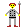
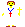
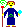
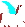
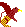
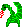
Spoilers. This guide reveals every dungeon's location and treasure, every Word of Power, and how the game ends. Every number in it was checked against the game's own data tables and code; where the in-game lore says one thing and the game does another, the guide says so. Item names appear in their in-game rarity colours, and every picture is one of the game's own sprites, maps or screens.
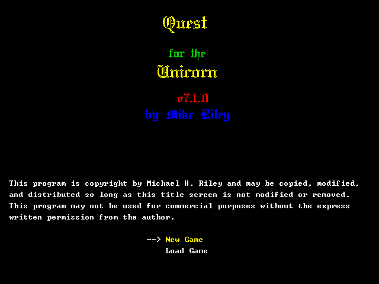
1The legend in brief
Long ago Marduk the explorer landed on the island of Halkanar, a land of elves, dwarves and countless unicorns. He built his city on the shore of what is now Marduk Lake, and men spread out to found Larkon, Solat, Alukrahn, Aljan, Algamar and Talgon.
Halkanar's wealth drew the dark wizards, one after another. Each left ruins, temples and treasures that you will plunder on your way to the last of them.
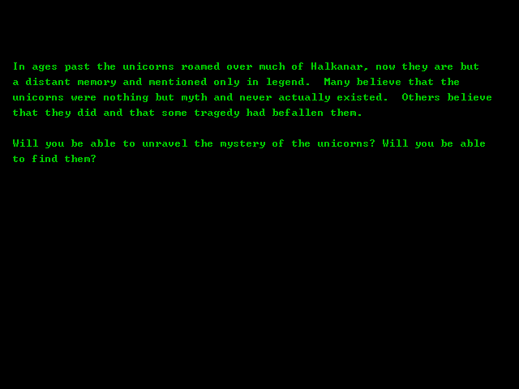
The opening story, shown after New Game.
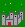
Caldnar
Came first. He conquered the land, built a capital in the Kobold Mountains and a castle in the Northern Realm, and ruled for almost twenty years.
Elanther
Destroyed Caldnar with little effort. Fearing some greater power, he built temples across Halkanar and had his followers capture and sacrifice unicorns, believing their power could be his. The surviving unicorns fled to a hidden valley. Elanther built the complex at Arath Ma Kon to work a great magic.
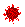
Eshter
The last and most fearful, found Elanther at Arath Ma Kon. He fled to the Enchanted Lands, raised the Ring Ridges and hid them with magic, and began forging a new magic from Adamantite. Eshter found him before it was ready and defeated him at his Forge. Some say Eshter was Caldnar's daughter.
Nichor
Eshter ruled for four years until a white wizard came over the sea. The people called him Nichor; he built his base in the northern Kobold Mountains and drove Eshter back. Knowing she was lost, Eshter ensnared the last of the unicorns and fled through the Gateway. Nobody knows where she went, but she was not destroyed.
Peace returned, and Talfharin, New Solat, Goldville and Radon were settled. Now a new darkness is forming, and horrors walk the earth again. You begin in Radon, the youngest city in the realm, with nothing but a ration, ten torches and your weapon.
2Before you start
2.1From the title screen to the first step
New Game on the title screen shows the opening story, then the New Game Options screen.
Choose your options (below), then press ENTER.
Create your character: name, sex, race, class, then 18 stat points.
You start on the overworld one square east of Radon's gate (region 9, X 73, Y 16), at 8:00 on day 1 of month 1.
2.2New Game Options
The rules and the gameplay changes are fixed once the character exists. Preferences can be changed later with O.
Useful preferences: Improved Interface (cursor menus, item cards, rarity colours and the Tab menu), Easy Spells, Improved Status: Icons, Floor Item Names, Auto-Open Doors and Auto-Search Walls (both On by default).
Leave the gameplay changes On
They fix bugs, and some are essential: Final Boss Spawns (without it Eshter never appears), Lost Entrance (the Valley of Fear can be entered), Ship Purchase, Ship Improvements, Possessions and Floor Items.
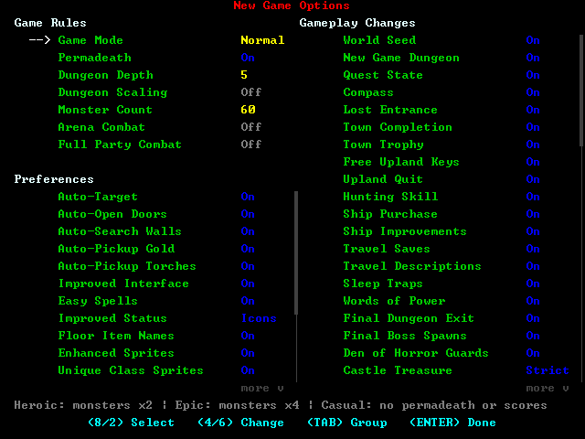
Rules and preferences on the left, gameplay changes on the right.
Option
Default
Recommendation
Game Mode
Normal
Normal for a first game. Heroic doubles every monster's HP, attack, defence, level and XP; Epic quadruples them. Casual turns off permadeath, scores and Rebirth.
Permadeath
On
Death deletes the character. Turning it Off still records scores and allows Rebirth, so it is a sensible choice for a first game.
Dungeon Depth
5
Every dungeon has this many levels, with its treasure on the last. 5 is the length this guide assumes. Deeper dungeons mean more XP and loot but longer trips.
Dungeon Scaling
Off
On raises monsters to your level once you outlevel a dungeon. Leave Off to use the suggested levels in this guide.
Monster Count
60
Monster groups per dungeon level. Fewer means slower levelling and fewer drops.
Arena Combat
Off
Off: only dungeon guardians (and overworld encounters) are fought in the 15 × 15 arena. On: from difficulty 8 up, monsters come in groups that are all fought in the arena.
Full Party Combat
Off
Off: your companions and the monsters deal each other a tenth of normal damage. On: full damage both ways.
Gameplay changes
All On
Leave them all On (see above).
2.3Races
Every stat starts at 10, then race and sex adjust it. A female character gets −1 Strength, +1 Dexterity, +1 Charisma and pays 2% less (and is paid 2% more) at every merchant.
Race
STR
DEX
CON
INT
WIS
CHR
Starting skills
Innate traits
Ageing
Human
+1
−1
0
0
0
0
Language 2, Lore 2
none
50
Elf
−1
+1
−1
0
+1
+1
Bow 2, Scouting 2, Riding 2
Infravision, immune to sleep and fear
400
Half-Elf
0
+1
0
+1
+1
−1
Bow 2, Riding 2
Infravision, resists fear and sleep
200
Dwarf
+1
+1
+1
−1
−1
−1
Survival 2, Combat 3
Immune to fear and poison, detects traps; searches automatically from level 10
250
Hobbit
−1
+2
+1
−1
−1
0
Scouting 3, Medicine 2
Resists poison, fear and sleep
70
Infravision means you see in dungeons without a light. Everyone else must burn torches, and torches cannot be bought, so Elves and Half-Elves have an easier start.
Ageing. Once your age passes the race's limit, every new year costs every stat (years past the limit ÷ 10) + 1 points. A character dies of old age when any stat reaches 0. Characters start aged 18 to 27, and a year is 12 months of 31 days, so ageing only matters for Humans and Hobbits who travel slowly or rent a lot of inn months.
2.4Classes
Nine classes can be chosen at the start. Four more are earned later (see class promotions). The figures are the ones the game draws with the Unique Class Sprites preference.
Class
Hit die
Magic
Starting kit
Skills
Notes
Fighter Swords
d10
none
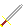
Short Sword Ringmail
1H Sword 5
Levels fastest (100 XP for level 2). Becomes a Cavalier at 16.
Paladin Blunt
d10
Cleric spells from level 9
Hammer Ringmail
Mace 5, Healing 3, Medicine 3
Fast HP regeneration; the h heal gets stronger from level 8. Cavalier at 16.
Ranger Bows
d8
Druid spells from level 8
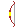
Short Bow Leather
Bow 5, Crossbow 5, Scouting 5, Survival 3
Good regeneration. Cavalier at 19.
Cleric Blunt
d6
Cleric spells
Mace Leather Potion of Healing
Mace 5, Healing 5
Healing and protection; Noble at 23.
Druid Polearms
d6
Druid spells
Halberd Leather Potion of Healing
Poleaxe 5, Scouting 4, Riding 4
Temples heal a Druid to twice its maximum HP and mana. Shape-changing and Calm Beast. Hierophant at 31.
Mage Wands
d4
Mage spells
Wand of Pine Robe of Cotton Potion of Healing Staff of Smiting
Magic 5
Strongest attack spells; slowest levelling. Noble at 38.
Monk Unarmed
d4
none
2 Bandages
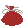
Copper Throwing Stars
Healing 5, Thrown 5
See below. Noble at 44.
Enchanter Swords
d4
Enchanter spells
Short Sword Leather Potion of Healing
1H Sword 5
Casts permanent enchantments onto gear. Noble at 25.
Shaman Blunt
d6
Shaman spells
Mace Leather Potion of Healing
Mace 5, Healing 5, Magic 5, Medicine 5
Walks on water from level 1; resists cold (6), fire (9), electricity (12), every element (15); levitates from 18.
Every character also starts with a 7-bite Iron Rations in the left shoulder slot and 10 torches, and with no gold. Casters start knowing every level-1 spell of their class.
The Monk
Fights bare-handed: with the main hand empty its weapon damage is level × 2 + 3, and it gets armour of level × 2 + 5 as long as it wears no armour and no shield. Any weapon in the main hand cripples it. Each hit can paralyse (a chance of level × 2 %) and very rarely kills outright. Monks become immune to fear at level 11 and to sleep at 17, are permanently hasted from 23, and immune to poison from 29.
Levelling. The XP needed doubles with each level until it passes 100,000, then grows by a class factor per level: ×1.2 (Fighter, Cavalier), ×1.25 (Ranger, Cleric, Druid), ×1.3 (Paladin, Monk, Shaman, Assassin, Hierophant, Noble), ×1.4 (Mage, Enchanter). Each level adds a hit-die roll of HP (plus the Constitution bonus), mana for casters, and has a 40% chance to raise one random stat by 1. Monks and Cavaliers also gain a point in one of their class skills.
2.5Spending the 18 points
You cannot leave points unspent, and you can lower a stat to 8 to gain points elsewhere. What each stat really does is below; the manual's one-line summaries are looser than the game's rules.
Suggested spreads: melee classes raise DEX to 15-17 and CON to 15-16 first; casters raise INT and WIS, plus CON 15; everyone gains from CHR 15 if points remain, since money is tight early on.
A Birthstone Ring for the current real month adds 10% to every stat, your HP, mana, weapon and armour, plus 5% crit and dodge, while worn.
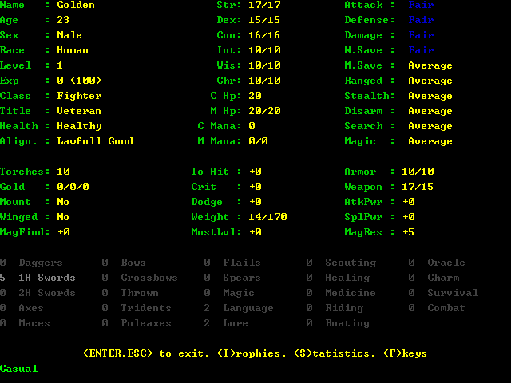
The record sheet (R) of a new Human Fighter.
Stat
What it does
Useful thresholds
Strength
Carrying capacity is STR × 10. Above 18, adds (STR − 16) ÷ 3 percent to melee damage.
Enough to carry your gear
Dexterity
The combat stat. Above 15 adds (DEX − 10) ÷ 5 to your Hit rating (each point is worth 2.5% to hit). Above 16 adds 1% crit and 1% dodge per 5 points over 15. Monsters hit you 4% less at DEX 15-16, 8% less at 17-20, 12% less at 21-24 and 16% less at 25+.
15, then 17
Constitution
Bonus HP every level of (CON − 10) ÷ 3 once CON is 15 or more (also on your starting HP).
15 (+1 per level), 16 (+2), 19 (+3), 22 (+4)
Intelligence
For casters, added straight onto maximum mana. Halved, it is your magic resistance (INT ÷ 2 percent, up to 90%) against monster spells. Above 18 adds spell power.
15-18 for casters
Wisdom
Bonus mana per level of (WIS − 10) ÷ 4 when WIS is over 15. Helps resist sleep, poison, roots and fear (2% per tier: 15-17, 18-21, 22-23, 24+), and gives a 20% + 20% per tier chance to halve a monster's spell.
Health and mana regeneration come from your class, napping, gear and sockets, not from Constitution or Wisdom.
3How the game works
3.1The four places you play
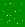
The uplandTwelve regions of 100 × 100 squares. Each step costs time and food.
TownsWalled maps with merchants and townsfolk. Walk off any edge or out of the gate to leave.
DungeonsGenerated levels, five deep by default, with a treasure and its guardian at the bottom.
The arenaA 15 × 15 battlefield for overworld encounters and dungeon groups.
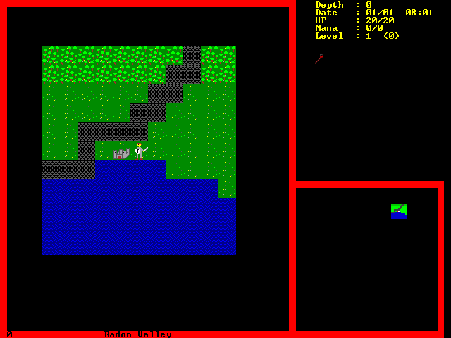
Your first view of the upland, one step east of Radon (the grey castle). The status panel is at the top right and the minimap below it.
3.2Essential keys
Movement is on the number pad (or arrows, Home, End, PgUp, PgDn): 8 up, 2 down, 4 left, 6 right, 7913 diagonals. With the Improved Interface preference, Tab opens a menu of everything you can do where you stand, and runs it for you without taking a turn to open.
Key
On the upland
In towns and dungeons
>
Enter the town, dungeon or Gateway you stand on
Go down stairs (or into Castle Eshter)
<
Go up stairs; on level 1 this leaves the dungeon
5
Run in a direction
tb
Talk to an adjacent person; beside a merchant's counter, trade
j
Ask an adjacent friendly or pacified creature to join your party
gG
Take the item underfoot into your inventory / straight into your pack
iue
Inventory, use an item, eat
same
h
Hunt for food (also s)
Heal (class skill; uses a healing item when on cooldown)
s
Search for traps and secret doors
l
Light a torch (2,000 turns of light)
mx
Cast a spell; transcribe a spell scroll
fT-=
Fire a bow, wand or Phaser; throw; throw from the left or right hand
w
Say a Word of Power
A
Activate an altar or runestone
C
Crafting bench
n
Nap for a number of hours
ocJ
Open, close, jam a door
p
Party screen (orders, positions, statistics, training in town)
q
Quest log, with the game's suggested next dungeon
v
View a direction
Look at a square
E
Board or leave your ship
~
Show region and X,Y
Show region, the dungeon's X,Y and your position
ROHL
Record sheet, options, icons, message log
same
{[}]
Save or recall weapons / full gear sets
same
SXQ
Save and continue, save and exit, quit without saving
same
F1-F10
With the Tardis: jump to a stored destination
Spells or macros (see the manual)
Shift+F1-F10
With the Tardis: store this spot as a destination
Ctrl+P takes a screenshot, Ctrl+M toggles the music and Alt+Enter toggles fullscreen on any screen.
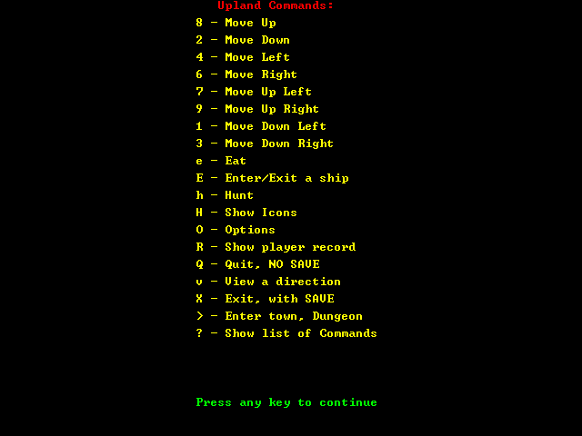
? lists the commands wherever you are.
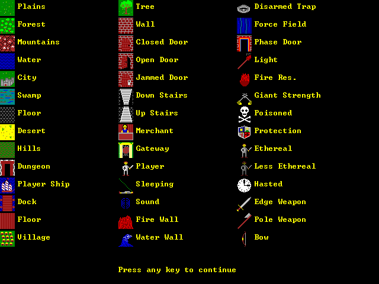
H shows the game's own legend of tiles and status icons.
3.3Time, food and ageing
Your Health bar is your stomach: 100 is full, and you starve at 0. On the upland each step takes time and every hour costs 1 Health:
Terrain
On foot
Riding
Flying mount
Plains, roads, other
1 h
40 min
20 min
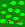
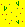
Forest, desert
1 h 20 min
52 min
20 min
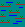
Swamp
1 h 40 min
1 h
20 min
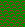
Hills
2 h
1 h 20 min
20 min
Mountains (flying only)
3 h
2 h
20 min
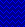
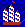
Water (ship)
1 h
Riding and Boating skill shorten these further. In towns and dungeons a turn is one minute.
Food. Rations are cheap at any supply store: Standard Rations (7 bites, +10 Health each), Iron Rations (7 bites, +20), Deluxe Rations (7 bites, +40), Expedition Rations (30 bites, +20). e eats the first food in your inventory, then your pack. An inn's Merchant's Meal (4 gold) gives +10 Health and +10 HP.
When you run short on the upland, step off the road and press h to hunt: you may find rations, herbs, ores, wood or water. Forests are the best hunting ground, water the worst, and your Scouting skill multiplies the chance. A Giant Charm or a Ring of Nourishment removes the need to eat.
3.4Light and seeing
In a dungeon you see nothing without a light, unless you have infravision (Elves and Half-Elves). Torches burn for 2,000 turns (l), and you start with 10. They cannot be bought: monsters drop them (about one drop in five), and a Scroll of Torch Summoning adds 10. Lasting solutions:
Gem of Brightness: 5,000 turns of light per use and it never runs out, 17,500 gold at magic shops.
Staff of Illumination: 30 charges, magic shops.
The spells Light (Mage 5, Cleric 1, the Druid's Produce Flame 3, the Shaman's Moonglow 1) and Continual Light (Mage 13, Cleric 9, the Druid's Produce Fire 11), which lights you permanently. Lighting a torch or using another light afterwards replaces the permanent light with a timed one, so don't.
The Word of Power Illumina and the Talning Rod's Litraal.
3.5Dungeons
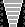
StairsDown on every level but the last; up stairs lead back. < on level 1 leaves.
Altars1 level in 100. Random blessing or curse with A.
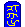
Runestones1 level in 5. Restore HP or mana, or a long buff.
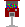
Gacha machines1 level in 100. A random capsule for 200-300 gold.
Treasure force field3 × 3 around the treasure. Halves your HP each turn.
Entering. Stand on the entrance and press >. You arrive on the up stairs of level 1.
Levels. Each level has up stairs and down stairs, except the bottom level, which has no down stairs. Levels are built from your world seed, so a dungeon's layout never changes for your character: draw maps if you like.
Persistence. Monsters and items stay as you left them until you enter a different dungeon. Then the old one resets: new monsters, no items, and its map forgotten.
Monsters on every level are drawn from the dungeon's difficulty: the upper three levels hold monsters of exactly that level, and levels 4 and 5 add monsters one level higher. (Difficulties above 20 use monsters from level 20 up.)
Traps.s searches the squares around you, and Scouting improves your odds. Levitation lets you walk over traps safely. Dwarves, Assassins and Cavaliers spot traps automatically, as does anyone wearing a Ring of Detect Traps.
Secret doors. With Auto-Search Walls on, walking into a wall searches it. Search dead ends.
Altars and runestones are used with A, once each. A runestone restores all HP or mana, or grants long fire resistance, protection, light, levitation or haste. An altar may bless or curse your weapon or armour, map the level, raise skills, add a socket, double your maximum mana, teach you every message, identify everything, or blind, frighten and confuse you.
Gacha machines are worked with b beside the machine.
The treasure and its guardian
The bottom level holds the dungeon's treasure: an item, or a lore inscription to read. It sits inside a 3 × 3 force field. Every turn you stand on a force-field square halves your current HP ("ZZZZAAAAPPPP!!!!!"). The treasure's own square is safe, so collecting it costs two halvings: one going in, one coming out. The Ring of Force Negation from the Goblin Caves makes you immune (everywhere except inside the Gateway).
The guardian waits near the treasure with its escort. It is two levels stronger than its normal kind, and each escort one level stronger. Bumping into any of them starts an arena fight against the whole group.
Completing the quest
Pick the treasure up with g, not G (which puts it straight in the pack without counting), or read the inscription with g. The Tab menu's Pick Up chooses correctly for you. The quest log (q) then lists the dungeon as completed, and the Compass moves on to the next one.
3.6Combat
To hit (melee): 10% + 2% for every level you are above the monster (never worse than −50%), plus 2.5% per point of Hit rating (weapon plus, Dexterity, Hit sockets and enchantments), half your Combat skill and half your weapon skill, clamped to 10%-90%. Sleeping (+75%), frightened or confused (+10% each) targets are easier to hit.
Damage (melee): your weapon's damage, +15% if it is your class's affinity weapon, raised by Attack Power, by each point of weapon skill over 5 (0.5% each) and by Combat skill (0.25% per point). A critical hit doubles it.
Weapon skill matters enormously. With skill 0 in a weapon your hit chance is multiplied by 0.16, and it only reaches normal at skill 5. Use weapons your class trained in, or take courses at a school first.
Damage is reduced by the monster's defence, as a percentage (a defence of 50 halves it, 95% at most).
Elements. Fire, cold, electric and arcane attacks are halved by the matching resistance (rings, potions, scrolls, sockets, class and runestone effects).
Ranged.f fires the bow, wand or Phaser in your main hand; none of them needs ammunition. Bows use your bow skill and weapon damage and always have at least a 10% chance to hit. Wands and the Phaser ignore armour and anti-magic, but their damage is a single random roll and their chance to hit has no floor against much stronger monsters.
Two weapons. Any class can dual-wield once Combat is 25 and both weapon skills are 25. The off-hand weapon does half damage and your shield stops counting.
Anti-magic creatures
These ignore every spell, and take no damage at all from a magical weapon: one with an enchantment, a filled socket, or a plus high enough for the target. Keep a plain, unenchanted weapon in a gear set for them. Wands and the Phaser still work, since they ignore anti-magic.
Green Slime · Gray Ooze · Beholder · Will-o-wisp ·
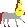
Lamia Guard ·
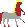
Lamia Queen ·
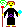
Necromancer · Dark-Magi ·
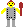
Giant King ·
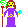
Eshter
The reverse is the
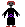
Vampire, which is anti-physical: a non-magical weapon does nothing to it.
The arena. Overworld encounters, guardian groups and (with Arena Combat on) other groups are fought on a 15 × 15 field. Your party fights beside you. When every monster is dead, ENTER or ESC leaves. You can also flee by walking off the edge, unless you are frightened.
Monsters' attacks hit more often the higher their level is compared with half your level, and less often with a high Dexterity, dodge bonuses or a protection effect. Many monsters also poison, put you to sleep, root you, frighten you or cast missiles.
3.7Healing and resting
h heals up to twice your Healing skill (at least 30% of that), then needs 500 turns to recover. A healer in your party (a Nymph) or Paladin levels can raise the amount. While it recovers, h uses the first healing item it finds in your inventory, then your pack, so order your inventory.
n naps for a number of hours: HP regenerate six times as fast and mana faster too. Carrying a Tent (magic shops, 1,000 gold) makes napping HP recovery 21 times as fast. Being hit wakes you.
Otherwise HP and mana regenerate slowly. Paladins, Rangers, Druids and Shamans regenerate HP faster, and HP and mana regeneration sockets and enchantments, or a regeneration amulet or ring, speed both up.
Temples: full HP for 100 gold, full mana for 500.
Inns : a room for a night restores HP, mana and Health; a week sets your HP to twice its maximum, a month to three times (and passes 7 or 31 days). The extra HP lasts until healing tops you up, since healing never goes above maximum. Rent a month before a hard fight and do not heal until you have dropped below your maximum.
3.8Your party and mounts
You can have up to five companions:
Ask to join (j) a friendly creature beside you. You get one try per friendly creature (a pacified one can be asked again), with a chance of 50% + 10% for every level you are above it.
Pacify, then recruit. The spells Calm Beast (Druid 15), Calm Person (Cleric 15), Hold Demon (Mage 15) and Pacify (Mage, Cleric and Druid 25) pacify nearby creatures, which can then be asked to join with the same odds. A pacified Griffon (level 7) or dragon becomes a flying mount.
Buy a mount at Enchanted Creatures in Nichorville (see the services).
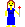
Nixie, Dryad, NymphFriendly; the Nymph heals the party.
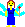
Pixie, SpriteFriendly companions.
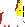
CentaurFriendly mount, level 4.
HorseFriendly mount, level 4.
PegasusFriendly flying mount, level 17.
GriffonPacify it: flying mount, level 7.
DragonsPacified Green, White, Black, Blue, Red or Chromatic: flying mounts.
Companions share your XP: the kill is split into (2 + companions) shares, the killer takes two and everyone else one. They are fully healed after each arena fight and level up on their own, and in towns you can pay to train them a level (p, select, ENTER). A companion killed in a fight is gone for good, and with it your mount or flight. Set mounts to Evade on the party screen (p, then o).
Any mount in the party lets you ride (faster overworld travel). A flying mount lets you cross mountains and water and travel at 20 minutes a step.
3.9Alignment: avoid becoming an Assassin
You start with alignment 100. Killing a friendly creature costs 20, and an area spell that hits one costs 5. If alignment ever reaches 0, you immediately become an Assassin at level 1, losing your class and your levels. Never attack townsfolk or friendly dungeon creatures, and watch your area spells. A temple restores alignment for 500 gold per missing point.
3.10Skills and schools
Skills rise with use and with courses at any town's school. A course adds 1 point; its price is the base price times (skill + 1), times 3 from skill 5, 5 from 10, 7 from 25, 9 from 50 and 11 from 75.
To-hit with that weapon; below 5 you are badly penalised
Combat Techniques
Combat
50
To-hit with everything; 25 is needed to dual-wield
Scouting
Scouting
35
Searching, spotting traps, hunting food
Communication
Language
25
Reading Scrolls of Lore and Information
Magical Writing
Lore
200
Auto-identifying items when picked up
Magical Incantation
Magic
200
Spell damage, cheaper spells, longer summons
Medical Practices
Healing
75
The h heal
Alchemy
Medicine
97
Potions heal 1% more per point
Horsemanship
Riding
25
Faster riding
Nautical Navigation
Boating
45
Faster sailing
Psychic Awareness
Oracle
250
Wider sight; chance to see stairs, traps or a whole level on arrival
Public Relations
Charm
32
Better prices and haggling (up to 30% at 100)
Wilderness Survival
Survival
35
Nothing but its trophy
3.11Items and rarity colours
With the Improved Interface preference, an item's name is drawn in its rarity colour once it is identified. This guide uses the same colours, so you can tell at a glance how rare a thing is:
RingunidentifiedShort SwordcommonIron RationsuncommonPotion of HealingrareFour-Leaf Cloververy rare
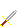
Dagger of Stormsultra rare
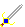
Excaliburunique
Identifying. Commons identify themselves; rarer items rarely do (Lore skill helps). Pay a pawn shop 8% of the item's value, use a Scroll of Identification or Staff of Identification, or wear a Ring of Identification. If a merchant offers more than you expect for an unidentified piece, identify it first: it may be special.
Special gear.Mutable items roll a prefix and suffixes and are often stronger than normal gear of their level. Legacy items (simple names, yellow once identified) level up with you. Legendary items carry three enchantments and three open sockets. Ayres' Mythical armour, cloak, helm, boots, ring and weapon adapt to your class.
Sockets and gems.use a gem, then pick a socketed item. An item holds up to three.
Curses. An item with a negative plus cannot be taken off. A temple removes the curse for 1,000 gold per point.
Gear sets.} saves everything you wear into one of ten sets and ] puts a set back on; { and [ do the same for just your weapons. Keep a plain weapon set for anti-magic foes and a ranged set for wands or bows.
Weight. You can carry STR × 10. Rings and Amulets of Weight Lifting add 25 each.
Carry, don't pack. Magical tools such as the Compass and the Tardis only work while carried in a hand, a shoulder slot or a belt slot of your inventory. In the pack they do nothing.
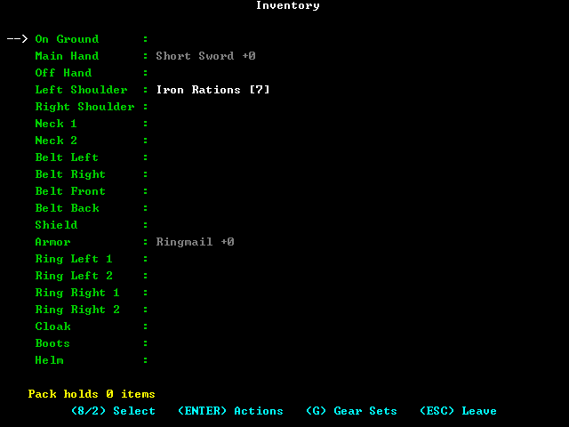
The inventory. Magical tools only work in the hands, shoulders and belt.
3.12Money
You start with no gold. Income comes from gold piles in dungeons, selling loot (a pawn shop pays 8% of value, half that if unidentified; gems fetch 95%), bank interest (0.5% a month), and later the Cavalier's yearly salary and the Noble's level-up gold. Merchants let you haggle: offer less, and they come down a little each round, never below 90% of the asking price less half a percentage point per point of Charm. Offering below that insults them. Haggling trains Charm.
3.13Saving
S saves and continues, X saves and quits. With permadeath, the save is held as a backup while you play and deleted if you die or quit, so only a clean X keeps the character. Closing the window (Alt+F4) does not save.
4Getting around Halkanar
4.1The world map
Halkanar is 12 regions of 100 × 100 squares, in three rows of four. Walk off an edge to enter the next region. The east edge of regions 4, 8 and 12 and the west edge of regions 1, 5 and 9 are the end of the world.
This map is drawn from the game's own map files, every square in the colours of its tile's sprite: green plains, dark green forest, brown mountains, yellow desert, teal swamp and blue water. Hover over a pin for its name and click it to jump to the walkthrough. Dungeon numbers are the game's quest order, coloured by walkthrough chapter.
Ch. 2-3Ch. 4-5Ch. 6-7Ch. 8Ch. 9The Gateway (needs the Talisman)
Coordinates. In this guide a place is given as region and X,Y, with X counted from the west edge (1) to the east (100) and Y from the north edge (1) to the south (100). Press ~ on the upland to see your own.
Landmarks. The Great River runs across the north, with the Talfharin, Alakahri and Olde Forests on its north bank. Marduk Lake fills the middle of the island, with New Solat on its north shore and Marduk on its south. The Kobold Mountains have three passes (West, Middle and East). Radon Lake fills the Radon Valley, and the Radon River flows from it east through Talgon toward Marduk Vale. The Anjar Mountains and Anjar River run south of Larkon. In the Enchanted Lands, the Ring Ridges circle Lake Quenar and Elanthers Forge.
4.2Who can go where
The rivers, lakes and mountains split the land into separate walking areas:
Area
How you get there
What is in it
The Radon side
On foot from Radon
Radon Valley (Radon Mine, Platinum Mine, Capetown, New South Radon); the whole Great Desert (Goldville and four dungeons); all nine Kobold Mountain dungeons; northern Talgon (Goblin Caves, Calton Peak, Gargoyle Peak, Lost Valley); the Northern Realm south of the river (Talfharin, Temple of the Forest); the Realm of Nichor south of the river (Nichorville, Temple of the North, Stronghold of the Orcs, Ruins of Aljan); Marduk and the Hall of the Giants
The New Solat side
Travel agency to New Solat, or ship
New Solat, Solat, Ruins of Castle Tralin, Den of the Dragon, The Olde Forest, Castle Alakahri, Ruins of Alukrahn, Ruins of Castle Caldnar, Horror Point
Southern Talgon
Travel agency to Talgon, or ship
Talgon, Temple of the South
By water only
Ship, Folding Boat, a Shaman's water-walking, or flight
Radon Isle; the islands of Marduk Lake (Isle of the Dead, Haunted Isle, Temple of the Water); the Northeast Wastes (Great Swamp, Trolls Den, Lamia Point); southern Marduk (Isle of Will-o-Wisps, Black Hole, Lost Tomb, Tomb of Caldnar, Cave of Enchantment, Valley of Fear); all of Larkon; the Valley of Blood; the Enchanted Lands; the Gateway's islet
By air only
A flying mount, a Broom of Flying or a Pegasus Charm
Elanthers Forge (inside the Ring Ridges) and the Lost Valley of the Unicorns
4.3Walking routes
Step counts are the shortest walking routes, and each step on foot is at least an hour (and a point of food).
North: leave the Great Desert's north edge near X 45 into the Northern Realm at (46,100); then east along the river's south bank into the Realm of Nichor at (1,46).
Marduk on foot: Northern Realm, Realm of Nichor, the south-west corner of the Olde Realm, then south into region 7 at (14,1). The travel agency is far quicker.
Water, mountainsNever, nor on a town or dungeon square
Encounters are fought in the arena and are always weak: monsters of at most a third of your level, in groups of up to a third of your level (1 to 5).
4.5Travel agencies
Every town's travel agency sells a trip to any other town. The trip is instant and costs 3 gold per square of distance, plus 2,500 to go to Nichorville. These prices are fixed: Charisma does not change them.
From ↓ To →
Talfharin
Nichorville
New Solat
Goldville
Marduk
Radon
Capetown
N. S. Radon
Talgon
Talfharin
–
2,932
594
276
768
579
633
654
945
Nichorville
432
–
324
546
336
693
813
906
549
New Solat
594
2,824
–
870
246
1,017
1,137
1,230
873
Goldville
276
3,046
870
–
624
381
435
456
747
Marduk
768
2,836
246
624
–
771
891
984
627
Radon
579
3,193
1,017
381
771
–
120
213
366
Capetown
633
3,313
1,137
435
891
120
–
93
312
New South Radon
654
3,406
1,230
456
984
213
93
–
357
Talgon
945
3,049
873
747
627
366
312
357
–
Nichorville is cheap to leave but costs 2,500 extra to reach from anywhere. It is on the Radon side, so you can also walk there: 71 steps from Marduk.
4.6Ships
The travel agencies in Radon and Marduk have harbours and sell a ship for 2,500 gold. You can own one.
The ship appears in that town's harbour (Radon's is along the south edge of town). Walk onto it to board.
Sail off the edge of the town map to reach the open water beside the town.
A ship moves only on water. To go ashore, push twice in the same direction against land you could walk on; the ship waits there for you. Walk back onto it to sail again. E also boards and leaves.
Sailing onto Radon or Marduk docks you in its harbour.
Your shipAll of Halkanar's waters connect: from Radon you can sail out along the Radon River and around the coasts to every "by water" place, including the Gateway's islet.
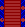
DocksEach square of water takes an hour, less with Boating skill.
4.7Flight and water-walking
A flying mount in your party (or the flight intrinsic) lets you cross mountains and water, and a flying mount moves you at 20 minutes a step. Flight is required for Elanthers Forge and the Lost Valley of the Unicorns.
Way to fly
Cost
Notes
Pegasus Enchanted Creatures, Nichorville
125,000
Flying mount. Also the Flying High trophy.
Green Dragon / Platinum Dragon same stable
450,000 750,000
Flying mounts (the Platinum Dragon needs the Platinum Dragon Mount change, On by default).
A wild Pegasus
free
Friendly, level 17. Met among the monsters of difficulty 16 and 17 dungeons. Ask it to join with j: 50% at level 17, +10% per level above, certain at 22. One try per Pegasus.
A Griffon or a dragon
a spell
Pacify a Griffon (level 7) with Calm Beast (Druid 15) or any of them with Pacify (Mage, Cleric, Druid 25), then j.
Broom of Flying
~18,000 + 2 potions
Crafted (see the recipe below). Carry it in a hand, shoulder or belt slot. Flies at walking speed. Also a very rare drop.
Pegasus Charm
seasonal
Can come out of a Brightly Colored Egg (an April item). Worn at the neck.
Broom100, magic shops+Potion of Levitationfound only+Potion of Hastefound only+Scroll of Bless5,000, bookshops=Broom of Flyingrecipe 12,500, no tool
The stable also sells non-flying mounts that speed up overland travel: Horse 1,000, Centaur 75,000, Nightmare 160,000. Mounts are party members: protect them (see your party).
Water-walking. A Shaman walks on water from level 1, and anyone carrying a Folding Boat (25,000 gold at magic shops) can step onto water. Either reaches every coast and the Gateway's islet without a ship, but not the two places ringed by mountains.
4.8The Compass
The Compass is the first dungeon's treasure. Carried in a hand, shoulder or belt slot, it shows an arrow at the bottom of the upland screen pointing at your target dungeon. The automatic target is the lowest-numbered unfinished dungeon in the game's quest order, the same "suggested quest" the quest log (q) shows, and the order this guide's walkthrough follows.
use the Compass to choose a target yourself. The list shows every dungeon you have entered or heard about: blue if completed, green if your level has reached its difficulty, red if not yet, yellow for the current target. Press ENTER to set the target, or q to go back to automatic.
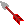
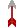
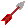
4.9The Tardis
The Tardis, the treasure of the Den of Horror: ten programmable teleport destinations, on the upland only. Carry it in a hand, shoulder or belt slot. Shift+F1 to Shift+F10 stores the square you stand on (with a description), F1 to F10 jumps there instantly, and T lists the destinations. Store every town and the Gateway's islet.
5Towns and their services
5.1Town directory
Town
Region
X,Y
Bank
Crafting
Harbour
House
Special
Radon
9 Radon Valley
72,16
Yes
Yes
Yes
150,000
Your start. Radon Recipes, the only recipe shop.
Capetown
9 Radon Valley
61,45
Yes
New South Radon
9 Radon Valley
49,64
Yes
Goldville
5 Great Desert
33,28
Yes
300,000
Talfharin
1 Northern Realm
46,49
200,000
Nichorville
2 Realm of Nichor
63,76
Yes
450,000
Enchanted Creatures (mounts). Its people tell lore. Trips here cost 2,500 extra.
New Solat
3 Olde Realm
44,49
175,000
Gateway to the north bank.
Marduk
7 Realm of Marduk
32,19
Yes
Yes
The capital, surrounded by villages.
Talgon
10 Realm of Talgon
57,53
Yes
160,000
Every town has a weaponsmith, armourer, alchemist, jeweller, bookshop, clothier, magic shop, supply store, spell shop, library, inn, school, travel agency, pawn shop, druidic temple and Cavalier's Guild. All banks share one account.
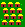
Villages (the small huts scattered over most regions, dozens of them around Marduk) each have a weaponsmith and an armourer selling level 1 and 2 gear, an inn and a supply store, plus townsfolk to talk to.
To trade, stand next to a merchant's counter
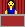
and press t or b (or pick the shop in the Tab menu). Houses for sale show as a sign : stand beside it and press b.
5.2Radon street guide
You arrive just inside the north gate, at (50,3). A road runs south through the middle of town to the harbour. Every counter is marked; hover over a number for its name. ~ shows your X,Y in town.
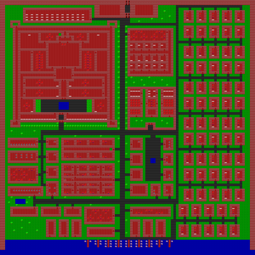
12345678910111213141516171819202122
1The Traveller's Stop Inn · 59,13
2The General Library of Radon Library · 59,40
3Radon U. School · 59,44
4Radon Concoctions Alchemist (potions) · 5,56
5Radon Spells Spell shop · 22,56
6Radon RecipesRecipes · 55,56
7Radon Jewelry Jeweller · 66,56
8The Enchanter Magic shop · 5,61
9Radon Crafters Crafting supplies · 54,62
10Radon Fashions Clothier (cloaks) · 67,62
11The Wizard's Rod Inn · 5,67
12Halkanar National Bank Bank · 54,68
13Radon Scrolls Bookshop · 67,68
14Radon Import Pawn shop · 21,73
15The Druidic Temple Temple · 57,74
16The Fighting Edge Weaponsmith · 62,74
17The Best Defense Armourer · 67,74
18Radon Supply Company Supplies (food, bandages) · 5,75
19The Cavalier's Guild Cavaliers · 20,83
20The Seamen's Inn Inn · 35,83
21Radon Inn Inn · 66,83
22Radon Travel AgencyTravel and ships · 36,91
5.3The other town maps
Goldville, Capetown, New South Radon, Talgon, New Solat and Talfharin
These six towns share one plan, with every kind of shop in the same place. The house for sale is at (18,65).
1234567891011121314151617
Shop
Goldville
Capetown
New South Radon
Talgon
New Solat
Talfharin
1Cavalier's Guild 44,3
The Cavalier's Guild
The Cavalier's Guild
The Cavalier's Guild
The Cavalier's Guild
The Cavalier's Guild
The Cavalier's Guild
2Supplies 30,17
The Miner's Store
The Traveller's Supply
The Dungeneer's Needs
Talgon Supply Co.
The Dragon Supply Co.
The Adventurer's Supply Co.
3Inn 53,17
Goldville Tavern
The Traveller's Inn
The Happy Rest
The Talgon Inn
New Solat Pub
The Mermaid Inn
4Travel agency 65,17
Goldville Travel
Capetown Travel
Adventurer's Travel
Talgon Travel Agency
Ye Olde Travel Company
Talfharin Travel
5Library 90,25
The Goldville Library
The Capetown Library
The Lore Archives
The Talgon General Library
Solat Information Center
The Records Archive
6Pawn shop 30,26
The Gold Mine
Lake Imports
Dragon Treasures
Halkanar Curios
Solat Relics
River Imports
7Jeweller 70,26
Goldville Gems
Capetown Jewels
The Sparkling Diamond
Talgon Jewel Works
Solat Gems
The Adamantite Works
8Alchemist 42,37
Potion Brewers of Goldville
Potions Etc.
Radon Valley Potions
Talgon Potion Supply
Sorcerer's Potions
Alaras Concoctions
9Magic shop 50,37
The Magician's Den
The Enchantress
The Magician's Fancy
The Wizardess
The Olde Spell
Unicorn Magic
10Bookshop 59,37
The Scroll Shop
Dragon Books
The Sage's Delight
The Wizard's Scribe
The Wizard's Scroll
Halkanar Books
11Clothier 69,37
Goldville Clothiers
The Magic Cloak
Cloaks and Things
Talgon Fashions
Solat Clothing
The Cloak Merchant
12School 90,47
Goldville College
Capetown Institute
South Radon U.
Talgon U.
Solat Training Facility
Northwest U.
13Weaponsmith 42,48
The Golden Defense
Capetown Weaponry
The REAL Defense
Talgon Weapons Supply
Ye Olde Weapons Shoppe
The Sharp Edge
14Armourer 59,48
Goldville Defense Co.
The Defensive Stance
Protection Co.
Dragon Defense Co.
Armour Plus
River Defense Co.
15Bank 31,51
Goldville Savings Bank
Capetown Bank
South Radon Bank
Talgon Savings
–
–
16Druidic temple 34,61
The Druidic Temple
The Druidic Temple
The Druidic Temple
The Druidic Temple
The Druidic Temple
The Druidic Temple
17Spell shop 52,67
The Complete Spellcaster
Lakeside Spells
Southern Spellcasting
The Wizard's Tools
The Modern Spellcaster
Halkanar Spells
Marduk
123456789101112131415161718
1Marduk Potions Alchemist · 19,11
2The Marduk Edge Weaponsmith · 28,11
3Marduk Spellcasting Spell shop · 39,11
4The Halkanar Library Library · 82,14
5The Marduk Institute School · 57,15
6Marduk Gems Jeweller · 10,19
7Marduk Sage Supply Bookshop · 19,19
8The Druidic Temple Temple · 40,19
9Marduk Crafting Supply Crafting supplies · 25,21
10The Wizard's Right Hand Magic shop · 19,27
11Marduk Armour Armourer · 28,27
12Importers of Marduk Pawn shop · 37,27
13Marduk Clothiers Clothier · 10,35
14The Cavalier's Guild Cavaliers · 26,35
15Marduk Supply Company Supplies · 28,43
16The Unicorn Inn Inn · 28,54
17Marduk TravelTravel and ships · 44,73
18The Crew's Nest Inn · 20,84
Nichorville
123456789101112131415161718
1Enchanted CreaturesMounts · 12,3
2The Importer Pawn shop · 59,10
3Nichorville Travel Travel agency · 97,12
4Nina's Spells Spell shop · 71,19
5Nichorville Weapons Weaponsmith · 86,19
6Nichorville Jewelry Jeweller · 7,22
7Nichorville Inn Inn · 43,22
8Nichorville Provisions Supplies · 61,22
9Nichorville Armour Armourer · 21,31
10Nichorville Potions Alchemist · 39,53
11Nichorville Books Bookshop · 48,53
12Nichor's Magic Supply Magic shop · 57,53
13Zoltar's Cloak Shop Clothier · 73,53
14The Nichorville Archives Library · 94,53
15University of Nichorville School · 81,58
16The Druidic Temple Temple · 87,72
17The Crafter's Aid Crafting supplies · 94,78
18The Cavalier's Guild Cavaliers · 85,89
1234
Villages
Every village uses the same small plan, with four counters:
Item shops. Weaponsmiths sell weapons and throwing items, armourers armour, shields, helms and boots, alchemists potions, jewellers rings, amulets, gems and ores, bookshops scrolls and books, clothiers cloaks, magic shops staves, wands and magical equipment, supply stores food and bandages, crafting suppliers tools and materials. Prices depend on your Charisma, Charm skill and sex (see the stats), and you can haggle. Items worth knowing about, at their base prices:
Item
Shop
Price
Why
Standard / Iron / Deluxe / Expedition Rations
Supplies
14 / 21 / 35 / 90
Food for the road
Bandage(10 uses)
Supplies
20
Heals by your Healing skill; Monks start with two
Potion of Minor Healing(5 uses)
Alchemist
2,510
Early healing
Potions of Fire, Cold, Electric, Arcane Resistance
Alchemist
~1,000
Halve elemental damage for a while
Scroll of Identification(20 uses)
Bookshop
5,500
Identify loot yourself
Scroll of Information / Scroll of Lore
Bookshop
10 / 20
A random regional message / a random piece of lore
Scrolls of Trap Location, Remove Fear, Slow Poison
Bookshop
Utility
Scroll of Bless
Bookshop
5,000
Needed for the Broom of Flying
Scroll of Mind Shield
Bookshop
Resists psionic attacks (Mind Flayers)
Rings of Fire, Cold, Electric, Arcane Resistance
Jeweller
5,000
Permanent resistance
Ring of Fear Resistance
Jeweller
12,500
Ring / Amulet of Weight Lifting
Jeweller
20,000
+25 carrying capacity
Ring of Detect Curse
Jeweller
30,000
Gem of Brightness
Magic shop
17,500
Endless light
Staff of Identification(40 uses)
Magic shop
11,000
Tent
Magic shop
1,000
Much faster recovery while napping
Folding Boat
Magic shop
25,000
Walk on water
Broom
Magic shop
100
Base of the Broom of Flying
Pliers
Crafting supplies
15,000
The tool for jewellery, traps and the three great assemblies
Anvil
Crafting supplies
15,000
The tool for bars and smithing
Prices with charges, such as staves and multi-use potions, include the charges.
Spell shops sell scrolls of every class's spells. Your own class's spells cost a tenth of the price. The full price is the spell's level × 1,000 for levels 1-10, × 2,500 for 11-20 and × 5,000 above. Learn a scroll with x (transcribe): the spell's level may be at most your level + 1 minus the level at which your class gained magic (1 for casters, 8 for Rangers, 9 for Paladins), and you must have its mana, which the transcription uses up. Another class's spell succeeds only (Magic + Lore) ÷ 20 percent of the time and the scroll is lost on failure.
Radon Recipes sells every crafting recipe for a quarter of the finished item's value. use a recipe to learn it, then craft with C in any town or dungeon: the bench finds ingredients in your inventory, pack, Portable Hole, or the house you stand beside (press A for automatic, M to make). Recipes also turn up as loot.
Pawn shops sell ten random items that change every month, buy anything for 8% of its value (half if unidentified, 95% for gems) and identify items for 8% of their value. They can also sell from or identify your whole pack.
Libraries. A General Information search costs 100 gold, a Lore search 500. Type a keyword of at least five letters: the library shows and teaches the first matching message you do not know yet. Searching general information for part of a dungeon's name ("Lamia", "Wound", "Thron") teaches where it is and adds it to your Compass list.
Inns sell meals and drinks (Merchant's Meal 4 gold: +10 food and +10 HP; Rich Meal 6: +20 and +20; beer, ale, mead or wine 2: +3 food and +1 HP), rooms (1 night 20 gold, 1 week 120, 1 month 500; see healing) and Dragon Dice: bets of up to 100 gold, paying 2 to 6 times for 1-6-6 up to 5-6-6 and 4 to 36 times for triples. On average it returns about 71% of what you bet.
Druidic temples: Healing (100 gold, full HP; double for a Druid), Prayer (500, full mana; double for Druids and Hierophants), Restore Alignment (500 per missing point), Remove Curse (1,000 per point of curse), Become a Hierophant (Druids of level 31+), the Ritual of Rebirth (after you have won, not in Casual mode) and One with Nature, which lowers your game mode one step (Epic to Heroic to Normal to Casual) and, on reaching Casual, ends permadeath and scoring.
The Cavalier's Guild accepts Fighters and Paladins of level 16 and Rangers of level 19 (see promotions). A Cavalier collects 1,000 gold per level once a year, in month 1, at any guild.
Banks take deposits and pay 0.5% interest a month. Mortgage payments come out of your account each month.
Houses
Buy with any down payment; the rest is a 30-year mortgage at 0.5% a month, plus 2.3% closing costs. A house stores 500 items (stand beside its sign and press b). If your account cannot cover a monthly payment, the house is repossessed with everything in it. You may own five.
Enchanted Creatures (Nichorville only) sells mounts; see flight.
6People to talk to
6.1How talking works
TownsfolkMen and women in every town and village.
WarriorsVeterans, heroes and lords.
PriestsAcolytes up to high priests; they heal.
WizardsEvokers, sorcerers, wizards, an arch-magi.
Stand next to a person and press t. Townsfolk, village folk and friendly creatures in dungeons all talk, once each (after that they just say "Hello!!"). Each tells you one message at random from the pool for the region you are in, or from the general history and geography of Halkanar. Every message you hear is remembered, and a message that names a dungeon's location adds that dungeon to your Compass list. Talking also trains your Language skill.
Nichorville is different
Nichorville contains the greatest knowledge of lore, and its folk tell you lore instead, including where the three Gateway items were last seen. Talk to everyone there.
Never attack townsfolk or friendly creatures (see alignment).
6.2What the people know
Everywhere (general messages): the history in section 1, the names and borders of the twelve realms, the rivers and mountain ranges, where each town lies, and two dungeon hints: The ruins of Larkon are found at the Head of the Anjar River (53) and Elanthers Forge is located inside the Ring Ridges (55).
Radon Valley Radon, Capetown, New South Radon
There are only two routes out of the valley: the Merchants Highway and the Radon River.
There exists an old mine due north of Radon → Radon Mine
There is an old mine due west of New South Radon → Platinum Mine
There is an Island off the tip of Radon Peninsula → Radon Isle
Great Desert Goldville and the villages
There are some old mines in the hills just south of Goldville → Mines of the Desert
The Temple of the Crescent is in a Crescent shaped mountain → 7
The Temple of the Sun is located in the south portion of the Desert → 5
Areth Knoll is located in a valley in the Coastal Mountains → 29
Northern Realm Talfharin and the villages
The Ruins of Castle Caldnar can be found at the end of the Talfharin Forest, which starts across the river from Talfharin → 44
Horror point lies at the North-West most point of Halkanar → 31
The Temple of the Forest lies in the North Forests → 14
The Ruins of Alukrahn are on the bank of the Great River → 24
Realm of Nichor its villages
Castle Alakahri is on the top of the Alakahri Butte in the Alakahri Forest north of the Great River → 27
The Temple of the North is located off the Middle pass just south of the river → 15
The Ruins of Aljan are located off the western mountain pass → 12
The Stronghold of the Orcs is in a valley between the Middle and East passes → 16
The Olde Realm New Solat and the villages
The Ruins of Solat are just north and west of New Solat → 37
Castle Tralin just north and east of New Solat → 58
The Den of the Dragon in the North East corner of the Olde Realm → 50
The Isle of the Dead near the south shore of Marduk Lake → 17
The Haunted Isle near the west shore → 21; the Temple of the Water on an Island near the East shore → 25
Kobold Mountains its villages
There are three main passes. The Den of Horror is off the West pass, near the north → 41; the Lost Mine off the West pass, South of the Den of Horror → 23
The Temple of the Dark on the West edge of the Kobold Range → 8; the Algamar ruins in the Foothills → 22
The Den of the Beast at the Southern edge of the Middle Pass → 9; Arath Ma Kon on the Middle pass northwest of Den of the Beast → 30
The Hall of the Kobold Lords just north of Volcanic Lake → 19
The Ruins of Caldnar off the east pass → 34; the Temple of the Moon off the East pass, North of Caldnar → 11
Realm of Marduk Marduk and its many villages
There are three passes along the Anjar Mountains, and one east of Larkon.
The Isle of the Will-o-Wisps is in the Radon river south of the Anjar river → 33; the Tomb of Caldnar lies due East from the Isle of the Will-o-Wisps → 54
The Black Hole is between the Middle and North passes, not far from the Radon River → 51
The Hall of the Giants south of Marduk at the Edge of the Kobold Mountains → 39
The Lost Tomb near Dryad Lake → 36; the Cave of Enchantment between the Middle and South passes → 45
The Valley of Fear along a canyon connected with the south pass → 42
The Valleys of the Gods and the Giants between the North and middle passes → 52, 46; of the Titans between the South and middle passes → 47
Realm of Talgon Talgon and its villages
Passes lead into the Radon Mountains and the Kobold Mountains just north of the Radon River.
Gargoyle Peak and Calton Peak each stand at the end of a pass → 18, 13
The Goblin Caves are just off the Calton Peak pass → 6; the Lost Valley off the Gargoyle Peak pass → 20
The Temple of the South lies in the South Kobold Mountains → 10
The Valley of Blood in the South Radon Mountains, and The only pass into the South Radon range is on the Coast → 28
The Talisman was last in the possession of Elanther → 55
The Aurafax was last seen in the possession of Caldnar → 44
The lost Crown of Might was last seen in Solat → 37; The lost Sceptre of Might was in the city Alukrahn → 24
A great sword lies somewhere in the Old Realm (58) and a mystical sword in Areth Knoll (29).
An Unspeakable horror lives at the bottom of the Den of Horrors along with A Mystical traveling machine → 41
Alakahri's picture machine only works at the bottoms of dungeons → 27
The Triad of Might consisted of a Crown, a Sceptre, and an Orb, and All three pieces of the Triad must be owned for the power to work.
6.3Regions with nobody to ask
The Northeast Wastes, Larkon, the Enchanted Lands and the Valley of the Unicorns have no towns or villages. To learn their secrets:
Talk to friendly creatures in their dungeons; they share that region's messages.
Read a Scroll of Information (10 gold) while standing in the region: it gives a random message for where you are. The Mage spell Read Languages does the same.
Search a library (100 gold) for the place's name.
Just go there: entering a dungeon adds it to the Compass list.
Enchanted Lands
The Cave of the Dragons in the Moon Hills, north of the Ring Ridges → 59
The Cave of Souls in the middle of the Swamp of the Souls, near the bend of the Radon River → 40
The Cave of the Wisps in the Wisp Desert, just south of the Anjar Mountains → 49
The Gates of Hell in the Canyon at the Southeast edge of the Enchanted Lands → 56
The Throne of the Gods in the Southron Mountain Range → 57
The Earth Wound's entrance in the Anjar Desert → 43
Lone Peak on the western side of the Ring Ridges → 48
Northeast Wastes
A cave in the middle of the Great Swamp, south of the Great River → 26
Lamia Point in the Forest south of the Great Swamp → 38
The Trolls Den on the west edge of the Larkon Mountains → 32
A quirk
The hints for the Tomb of Caldnar and Elanthers Forge are cross-wired in this version. Hearing where the Tomb lies adds Elanthers Forge to your Compass list, and hearing about the Forge adds the Tomb.
6.4Other sources of knowledge
Scroll of Lore (20 gold): a random piece of lore from anywhere in Halkanar. Your Language skill decides whether you can read it (25% + 5% per point); the Talning Rod's Loeer and the Understand Lore spell make it certain.
Scroll of Information: see above (50% + 5% per point of Language to read; Reahl or Tongues make it certain).
Dungeon inscriptions : 36 of the 60 dungeons hold a lore inscription instead of an item; the lore table lists them all.
7The main quest at a glance
7.1What you need to win
Defeat Eshter, who waits in Castle Eshter, the fifth and last level of the Gateway. The Gateway stands on a small forested islet off the coast of the Valley of the Unicorns (region 12, X 80, Y 78). To reach and survive it you need:
With the Talisman, opens the Gateway so you can enter.
Amulet of Yathun
The Ruins of Larkon · Realm of Larkon (8) 55,40 · dungeon 53
Lets you see inside Gateway levels 1 to 3. Without it you move blind among walls that halve your HP (see the Gateway's levels).
A way to fly
Nichorville's stable, a recruited flyer, or a Broom of Flying
Elanthers Forge lies inside the Ring Ridges, walled by mountains. Nothing else gets you in (see flight).
A ship
Radon or Marduk travel agency · 2,500 gold
Half of Halkanar, and the Gateway's islet, can only be reached over water. A Folding Boat or flight also works (see ships).
A way to hurt Eshter
The Phaser (54), wands, a plain bow, summons; the Triad of Might
Spells cannot touch her and enchanted weapons do nothing to her. She never leaves the force field around her, so ranged attacks and summoned creatures are the safe way to fight her. With the Triad worn your blows never miss, but you must stand in her field to strike (see Castle Eshter).
Carry, don't pack
The three Gateway items only work while carried in a hand, a shoulder slot or a belt slot of your inventory, like the Compass and the Tardis. In the pack they do nothing.
Get flight: a Pegasus (125,000), a recruited flier, or a Broom of Flying.
Elanthers Forge (region 11, 68,61; difficulty 21): the Talisman.
Get a way to hurt an anti-magic boss from range: the Phaser (The Tomb of Caldnar, difficulty 21), a good wand, a plain (unenchanted) bow, or summoning spells. The Triad of Might (Solat, Crown, difficulty 17; Ruins of Alukrahn, Sceptre, 13; The Black Hole, Orb, 20) is worth having for its bonuses and its sure blows.
With all three Gateway items carried, go to the islet at region 12, 80,78, and enter the Gateway . Fight down five levels and defeat Eshter.
7.3Checklist for the Gateway
Tick items as you get them; this page remembers your ticks in this browser.
7.4The game's own order
The quest log's "suggested quest" and the Compass's automatic target follow a fixed order of 60 dungeons, roughly by difficulty. The walkthrough below follows that order chapter by chapter, with the logistics (ships, travel, flight) where you need them. You need not finish every dungeon: the treasures of the lore dungeons are messages, and the item treasures range from essential to merely useful. The full list is in the master dungeon table.
Suggested level
Each dungeon has a difficulty. Its monsters are of that level (one higher on the fourth and fifth levels), and the Compass shows its name in red until your level reaches it. Its guardian is several levels higher. The suggested level in this guide is the level at which the guardian is at most three levels above you, and never below the difficulty. Heroic and Epic games double or quadruple every monster, so add a good margin.
8Walkthrough
All 60 dungeons in the game's own quest order, the order the Compass follows. Each card shows the guardian you meet at the bottom, its escort, the treasure and the level to aim for. Tick Cleared on a card to mark it on the map and in the sidebar.
Guardian levels include their bonus (+2 for the guardian, +1 for each escort). "Level" is the suggested character level for a Normal game.
Chapter 1: First steps (level 1)
You stand east of Radon's gate at 8:00 on the first day. You have a weapon, an Iron Ration, ten torches and no money.
Step west onto Radon (4) and press >. You enter at the north gate.
Talk to everyone (t beside a person). Radon's people tell you about the Radon Mine, the Platinum Mine and Radon Isle, and the history of the realm. Each new message also adds its dungeon to your future Compass.
Look around (see the Radon map): the temple (57,74), the supply store (5,75), the pawn shop (21,73), the travel agency (36,91) and the harbour along the south edge. You cannot buy much yet.
Make sure your weapon is in your main hand and your armour is worn. Gear sets can wait.
Leave by the north gate and walk 8 squares north to the Radon Mine.
If you are not an Elf or Half-Elf, light a torch (l) as you enter each dungeon. Turn on Auto-Pickup Gold (O) so gold piles are collected as you walk over them.
Day 1, 8:00: look (v) west and the game names the castle Radon.
Chapter 2: The Radon Valley and the Great Desert (levels 1-7)
Everything here is on foot from Radon except Radon Isle, which needs the ship you buy along the way. The Goblin Caves give you the Ring of Force Negation: after that, treasure force fields never hurt you again outside the Gateway.
1
Radon Mine
Radon Valley · 72,8On footDifficulty 1
GuardianOgre Leader7
2 × Ogre 5
Where
8 steps due north of Radon, just west of the Merchants Highway.
Monsters
Hobgoblins, Kobolds, Orcs, Goblins, Skeletons, Larvae, Giant Frogs and Zombies (which frighten), with friendly Nixies and Pixies. Levels 4-5 add level 2 creatures: spiders and centipedes that poison, Ghouls, Imps, and the anti-magic Green Slime.
Treasure
Compass
Level
4
Clear levels 1-3 to gain your first few levels before going down. The Ogre group is a real fight for a level-1 character; use your potion or bandages, and remember you can flee the arena by walking off its edge. The treasure sits inside a force field: crossing it costs half your HP going in and again coming out, so rest first. Carry the Compass in a shoulder or belt slot from now on.
2
Platinum Mine
Radon Valley · 25,64On footDifficulty 2
GuardianOgre Chieftain8
Ogre Leader 6
Where
Due west of New South Radon. 77 steps from Radon: follow the road down the west side of Radon Lake. New South Radon is 24 squares further east.
Monsters
Giant Ants, Centipedes, Floating Eyes and Large Spiders (poison), Imps, Ghouls, Orc Guards, Troglodytes, Green Slime (anti-magic); friendly Dryads. Level 3 below: Carrion Crawlers and Harpies (sleep), Gray Ooze (anti-magic), Shadows and Manes demons (fear), Leopards, Huge Spiders.
Treasure
Scroll of Enchant Weapon: read it with your weapon in your main hand for +1 to the weapon.
Level
5
By now you should be selling loot. Visit New South Radon or Capetown to sell and resupply.
Milestone: buy a ship
Once you have 2,500 gold, buy a ship at the Radon Travel Agency. It opens up Radon Isle now and most of the world later.
3
Radon Isle
Radon Valley · 62,55By waterDifficulty 3
GuardianGroaning Spirit9
feararcane
2 × Wight 5
Where
An island in Radon Lake, off the tip of Radon Peninsula. Sail south from Radon's harbour.
Monsters
Giant Badgers, Hyenas, Leopards, Harpies and Carrion Crawlers (sleep), Gray Ooze (anti-magic), Shadows and Manes (fear), Orc Chiefs, Huge Spiders; friendly Nymphs (healers) and Sprites. Level 4 below: Gargoyles, Ogres, Wights (fear), Hell Hounds (fire), Gelatinous Cubes and Sirines (sleep), Giant Spiders, Worgs; friendly Centaurs and Horses.
Treasure
Scroll of Enchant Armour: +1 to the armour you wear.
Level
6
A friendly Centaur or Horse found here can be asked to join (j): a free mount that speeds up all your overland travel.
4
The Mines of the Desert
Great Desert · 30,30On footDifficulty 3
GuardianGiant Snake8
poison
2 × Giant Scorpion 6poison
Where
In the hills just south of Goldville, 3 steps from Goldville. North up the Merchants Highway, 86 steps from Radon.
Monsters
Difficulty 3, as Radon Isle.
Treasure
"A mysterious object came out of the sky at Areth Knoll long ago."The Light Sabre lies there (29).
Level
5
Goldville has a bank. Carry an antidote: a Potion or Scroll of Slow Poison.
5
Temple of the Sun
Great Desert · 48,88On footDifficulty 4
Guardian7-head Hydra9
6-head Hydra 7
Where
In the south of the desert, 43 steps from Radon: the closest desert dungeon to the highway.
"'Litraal' on the Talning rod will produce light."
Level
6
6
The Goblin Caves
Realm of Talgon · 76,18On footDifficulty 4
GuardianGoblin Chief9
2 × Goblin Guard 6
Where
Just off the Calton Peak pass. 145 steps from Radon: up the Merchants Highway, east across the desert into the Kobold Mountains near (1,77), then down into Talgon at (24,1) and east.
Monsters
Difficulty 4, as the Temple of the Sun.
Treasure
Ring of Force Negation
Level
6
One of the most useful items in the game. Worn on a ring finger, it makes you immune to the force fields around every dungeon treasure from now on (but not inside the Gateway). Calton Peak is next door, and Gargoyle Peak and the Lost Valley lie at the west end of the same region; come back for them in Chapters 3 to 5.
7
Temple of the Crescent
Great Desert · 48,39On footDifficulty 5
GuardianHill Giant10
2 × Griffon 8flying mount
Where
In a Crescent shaped mountain, 23 steps from Goldville.
"'Reahl' on the Talning rod will allow the understanding of Languages."
Level
7
Griffons are flying mounts. Wild Griffons (level 7) roam difficulty 6-7 dungeons; a Druid with Calm Beast can pacify and recruit one later.
Chapter 3: The Kobold Mountains and northern Talgon (levels 7-10)
The Kobold Mountains are reached from the Great Desert's east edge (around Y 70). Their villages (for example at 27,10 and 63,17 in region 6) are good places to rest and hear the mountains' secrets.
8
Temple of the Dark
Kobold Mountains · 26,62On footDifficulty 5
GuardianType V Demon10
feararcanespells
2 × Groaning Spirit 8
Where
On the West edge of the Kobold Range. 71 steps from Radon.
Monsters
Difficulty 5, as the Temple of the Crescent.
Treasure
"'Auralal' on the Talning rod produces Clairaudience."
Level
7
Fear is the danger here: a Ring of Fear Resistance or Scroll of Remove Fear helps. Elves, Dwarves and Monks (from level 11) are immune.
9
Den of the Beast
Kobold Mountains · 93,98On footDifficulty 6
GuardianWhite Dragon11
electricspells
2 × Green Dragon 8fire
Where
At the Southern edge of the Middle Pass. 164 steps from Radon.
Fire and electric resistance rings or potions halve the dragons' breath.
10
Temple of the South
Realm of Talgon · 90,75From TalgonDifficulty 7
GuardianGhost12
feararcane
2 × Apparition 9
Where
In the South Kobold Mountains. Reached from Talgon (68 steps), whose valley is walled off from the Radon side by the Radon River and the mountains: take the travel agency (366 gold from Radon) or your ship.
Monsters
Griffons, Groaning Spirits, Spectres, Hydras, Ogre Magi, Green Dragons, Goblin Chiefs. Level 8 below: Mind Flayers (psionic), Invisible Stalkers, Hill Giants, Gyno-Sphinxes, Type I and V Demons, Apparitions.
Treasure
"'Detral' on the Talning rod will find all traps on a level."It finds every trap on every level of the dungeon.
Level
9
A Scroll of Mind Shield protects against Mind Flayers.
11
Temple of the Moon
Kobold Mountains · 75,32On footDifficulty 7
GuardianSpirit Naga12
poisonspells
2 × Will-o-wisp 10anti-magic
Where
Off the East pass, North of Caldnar. 219 steps from Radon, 175 from Nichorville, 182 from Marduk.
Monsters
Difficulty 7, as the Temple of the South.
Treasure
"'Loeer' on the Talning rod will allow the understanding of lore."
Level
9
Will-o-wisps ignore spells and enchanted weapons. Bring a plain weapon (a gear set) or use wands.
12
Ruins of Aljan
Realm of Nichor · 17,86On footDifficulty 7
GuardianEfreeti12
firespells
2 × Will-o-wisp 10anti-magic
Where
Off the western mountain pass. 217 steps from Radon, through the Kobold Mountains and north into region 2 near X 11.
Monsters
Difficulty 7, as the Temple of the South.
Treasure
"The Talning rod has eight different functions."
Level
9
The Efreeti is immune to fire.
13
Calton Peak
Realm of Talgon · 80,6On footDifficulty 8
GuardianBlack Dragon13
firespells
2 × White Dragon 10electric
Where
In the Kobold mountains at the end of a pass, beside the Goblin Caves. 156 steps from Radon.
Monsters
Mind Flayers, Invisible Stalkers, 8-head Hydras, Hill Giants, Gyno-Sphinxes, Type I and V Demons, Apparitions. Level 9 below: Beholders and Will-o-wisps (anti-magic), Bulettes, Lamias, Stone Giants, Umber Hulks (sleep), Type II and VI Demons, White Dragons.
Treasure
"Beware, sometimes words of power backfire!"
Level
10
Chapter 4: The northern realms (levels 10-14)
Walk north from the Great Desert (exit near X 45) into the Northern Realm, then east along the Great River's south bank. Talfharin is the base for the Temple of the Forest; Nichorville, with its stable and its well-informed people, is the base for the Nichor dungeons. Talk to everyone in Nichorville.
14
Temple of the Forest
Northern Realm · 27,75On footDifficulty 8
GuardianLich13
sleepspells
2 × Ghost 11fear
Where
In the North Forests, 30 steps from Talfharin.
Monsters
Difficulty 8, as Calton Peak.
Treasure
"'Mala' on the Talning rod will detect magic."
Level
10
Sleep is deadly in a group fight; Elves are immune, Half-Elves and Hobbits resist.
15
Temple of the North
Realm of Nichor · 32,55On footDifficulty 8
GuardianFire Giant13
fire
2 × Fire Lizard 11firelingering
Where
Off the Middle pass just south of the river. 130 steps from Nichorville.
Monsters
Difficulty 8, as Calton Peak.
Treasure
"'Idahl' on the Talning rod will identify an enemy."
Level
10
Fire resistance halves everything this group does.
16
Stronghold of the Orcs
Realm of Nichor · 45,76On footDifficulty 9
GuardianOrc Warchief13
2 × Orc Captain 11
Where
In a valley between the Middle and East passes. 127 steps from Nichorville.
Monsters
Beholders, Will-o-wisps, Bulettes, 9-head Hydras, Lamias, Stone Giants, Hieraco-Sphinxes, Umber Hulks, Type II and VI Demons, White Dragons. Level 10 below: Black Puddings, Efreeti, Fire Lizards, Ghosts, Frost Giants, Spirit Nagas, Ropers, Type III Demons, Kobold Warriors.
Treasure
"'Ilital' will transport you one level up."A Word of Power.
Level
10
17
Isle of the Dead
Olde Realm · 67,91By waterDifficulty 10
Guardian13-head Hydra15
2 × 12-head Hydra 13
Where
An island near the south shore of Marduk Lake. Sail to Marduk Lake.
Monsters
Black Puddings, Efreeti, 10-head Hydras, Fire Lizards, Ghosts, Frost Giants, Spirit Nagas, Ropers, Type III Demons, Kobold Warriors. Level 11 below: Liches, Fire Giants, Type IV Demons, Black Dragons and Juiblex (fear, spells, 47,000 XP).
Treasure
"8 Sun Shards are required by the Sun Core."See the Sun Stone.
Level
12
18
Gargoyle Peak
Realm of Talgon · 10,5On footDifficulty 10
GuardianHuge Gargoyle15
2 × Large Gargoyle 13
Where
In the Radon mountains at the end of a pass. 177 steps from Radon.
Monsters
Difficulty 10, as the Isle of the Dead.
Treasure
"Some words of power may have side effects, be cautious."
Level
12
19
Hall of the Kobold Lords
Kobold Mountains · 78,68On footDifficulty 11
GuardianKobold Lord16
firelingering
3 × Kobold Guard 13
Where
Just north of Volcanic Lake. 178 steps from Radon.
Monsters
11-head Hydras, Liches (sleep), Fire Giants, Juiblex, Type IV Demons, Black Dragons. Level 12 below: Air Elementals and Cloud Giants (electric), 12-head Hydras, Guardian Nagas (poison), Andro-Sphinxes, Large Gargoyles, Kobold Guards.
Treasure
"'Mintaal' will return you to the Surface."A Word of Power.
Level
13
Chapter 5: Islands, lost mines and the Sceptre (levels 14-17)
From here on you need the ship (or a Folding Boat) for about half the dungeons, and the travel agency to reach New Solat (1,017 gold from Radon, 246 from Marduk) for the north bank.
20
The Lost Valley
Realm of Talgon · 9,54On footDifficulty 12
GuardianStorm Giant17
electric
3 × Cloud Giant 13electric
Where
Off the Gargoyle Peak pass. 159 steps from Radon.
Monsters
Air Elementals, Cloud Giants, Guardian Nagas, Andro-Sphinxes, 12-head Hydras, Large Gargoyles, Kobold Guards. Level 13 below: 13-head Hydras, Blue Dragons (cold), Huge Gargoyles.
Treasure
"Afraid of your enemies? Try 'Fearaway'."A Word of Power.
Level
14
Electric resistance halves this whole group.
21
The Haunted Isle
Olde Realm · 14,61By waterDifficulty 12
GuardianOrcus17
feararcanespells
2 × Type IV Demon 12
Where
Near the west shore of Marduk Lake.
Monsters
Difficulty 12, as the Lost Valley.
Treasure
"The Triad of Might has wonderous power!"
Level
14
22
Algamar Ruins
Kobold Mountains · 33,81On footDifficulty 12
GuardianOrcus17
feararcanespells
3 × Type IV Demon 12
Where
In the Foothills of the Kobold Mountains. 78 steps from Radon.
Close to Radon but well above the difficulty of its neighbours; come back once you are ready.
23
Lost Mine of the Dwarves
Kobold Mountains · 23,41On footDifficulty 12
GuardianDwarven Chief17
2 × Dwarven Guard 15
Where
Off the West pass, South of the Den of Horror. 150 steps from Radon.
Monsters
Difficulty 12, as the Lost Valley.
Treasure
Axe of the Dwarvish Lords (axe, damage 80)
Level
14
A great weapon for anyone who can wield axes (Fighters, Paladins, Rangers, Cavaliers, Shamans). It has no enchantments, so it also works against anti-magic monsters. No class starts with Axe skill: take five Axe Weaponry courses at a school (750 gold in all) before you swing it, or it hits and hurts at a sixth of its power.
24
Ruins of Alukrahn
Northern Realm · 81,43From New SolatDifficulty 13
Guardian16-head Hydra18
3 × 14-head Hydra 15
Where
On the bank of the Great River, on the north side. From New Solat (163 steps, west through region 2 along Y 10-24) or by ship along the Great River.
Monsters
13-head Hydras, Blue Dragons, Huge Gargoyles. Level 14 below: Fire Elementals, 14-head Hydras, Red Dragons, Troll Guards, Dwarven Guards.
The Sceptre is held in a hand. On its own it gives +9 Strength, Dexterity and Constitution. With the full Triad worn, using it finds every trap on every level, gives giant strength, and cures fear and roots.
25
Temple of the Water
Olde Realm · 85,61By waterDifficulty 13
GuardianWater Elemental18
coldlingering
2 × Water Elemental 17coldlingering
Where
On an Island near the East shore of Marduk Lake.
Monsters
Difficulty 13, as Alukrahn.
Treasure
"'Suraal' on the Talning rod will return you to the surface."
Level
15
Cold resistance halves this whole group.
26
The Great Swamp
Northeast Wastes · 68,55By waterDifficulty 13
GuardianPurple Worm17
poison
2 × 14-head Hydra 15
Where
A cave in the middle of the Great Swamp, south of the Great River.
Monsters
Difficulty 13, as Alukrahn.
Treasure
"Words of power generally do not work with enemies about."Not enforced in this version.
Level
14
27
Castle Alakahri
Realm of Nichor · 32,28From New SolatDifficulty 14
GuardianLesser Titan19
electricspellslingering
2 × Aerial Servant 17electric
Where
On the top of the Alakahri Butte in the Alakahri Forest, north of the Great River. From New Solat (125 steps west into region 2 near Y 10) or by ship.
The picture machine only works at the bottoms of dungeons: use it on a dungeon's last level and the whole level is revealed, treasure and all. A big time-saver for every dungeon after this one.
Chapter 6: The middle realms (levels 16-19)
Difficulty-15 and 16 dungeons are where dragons, giants and the high demons gather, and where XP comes fast: Orcus, Chromatic Dragons and Troll Shamans are each worth around 64,000 XP. Get resistances to fire, electricity and arcane damage now. Wild Pegasi (friendly, level 17) start appearing in difficulty 16 and 17 dungeons: ask every one you meet to join.
28
The Valley of Blood
Realm of Talgon · 49,81By waterDifficulty 15
GuardianTroll Chieftain20
2 × Lesser Titan 18electricspellslingering
Where
In the South Radon Mountains. The only pass into the South Radon range is on the Coast: sail along Talgon's south coast, step ashore below the valley and walk up the pass.
"Try using 'Blinkahl' to escape your enemies."A Word of Power.
Level
17
29
Areth Knoll
Great Desert · 25,80On footDifficulty 15
GuardianEarth Elemental20
2 × Water Elemental 17coldlingering
Where
In a valley in the Coastal Mountains. 68 steps from Radon, 54 from Goldville.
Monsters
Difficulty 15, as the Valley of Blood.
Treasure
Light Sabre (one-handed sword, damage 60), the "mysterious object that came out of the sky".
Level
17
A plain weapon, so it works on anti-magic monsters.
30
Arath Ma Kon
Kobold Mountains · 75,83On footDifficulty 15
GuardianGreater Spirit20
feararcane
2 × Unbound Spirit 19feararcane
Where
On the Middle pass northwest of Den of the Beast. 158 steps from Radon.
Monsters
Difficulty 15, as the Valley of Blood.
Treasure
Talning Rod, Elanther's eight-function rod.
Level
17
use the rod and type a function word: Mala, Auralal, Idahl, Loeer, Reahl, Litraal, Suraal or Detral (see the Rod's functions). The temples you have cleared taught you most of them; the words work whether you learned them or not.
31
Horror Point
Northern Realm · 25,29From New SolatDifficulty 15
GuardianLesser Titan19
electricspellslingering
Lesser Titan 18electriclingering
Where
At the North-West most point of Halkanar, on the north bank. From New Solat (219 steps west along the north bank) or by ship along the north-west coast.
The Necromancer ignores spells and enchanted weapons. The Holy Avenger itself is a plain weapon.
35
The Olde Forest
Northeast Wastes · 60,16From New SolatDifficulty 16
GuardianForest Spirit21
2 × Earth Elemental 19
Where
A cave in the East of the Olde Forest. From New Solat, 116 steps east along the north bank.
Monsters
Difficulty 16, as the Ruins of Caldnar.
Treasure
"The Triad of Might can defeat Eshter."
Level
18
36
The Lost Tomb
Realm of Marduk · 89,69By waterDifficulty 16
GuardianNecromancer21
anti-magicspells
2 × Earth Elemental 19
Where
Near Dryad Lake, in the Anjar Mountains between the North and Middle passes.
Monsters
Difficulty 16, as the Ruins of Caldnar.
Treasure
"'Indral' will slow poison."A Word of Power; in fact it cures poison.
Level
18
Chapter 7: The Crown and the Aurafax (levels 19-22)
Two of the main-quest items are in this chapter: the Crown of Might (Solat) and the Aurafax (Ruins of Castle Caldnar). Both are on the New Solat side: travel to New Solat (1,017 gold from Radon) and work from there. If you have not got flight yet, start saving for a Pegasus or a Broom of Flying now.
37
Solat
Olde Realm · 27,22From New SolatDifficulty 17
GuardianDark-Magi22
anti-magicspells
2 × Aerial Servant 17
Where
The ruins of the old capital, just north and west of New Solat, 27 steps away.
The Crown is a helm with +9 Intelligence, Wisdom and Charisma and three open sockets. With the full Triad worn, using it reveals the stairs and monsters on the level and lets you read languages and lore.
38
Lamia Point
Northeast Wastes · 85,79By waterDifficulty 17
GuardianLamia Queen22
anti-magic
4 × Lamia Guard 20anti-magicspells
Where
In the Forest south of the Great Swamp.
Monsters
Difficulty 17, as Solat.
Treasure
"Bet you thought you would find something usefull down here, signed Elanther."
Level
19
The whole group is anti-magic, and the guards cast. Nothing but a joke at the bottom: bring a plain weapon or wands, or skip it unless you want the Completionist trophy.
39
Hall of the Giants
Realm of Marduk · 10,50On footDifficulty 17
GuardianGiant King22
anti-magic
3 × Storm Giant 16electric
Where
South of Marduk at the Edge of the Kobold Mountains. 31 steps from Marduk.
Monsters
Difficulty 17, as Solat.
Treasure
"The Valley of the Unicorns can only be found by riding a Pegasus."Any kind of flight works.
Level
19
40
The Cave of Souls
Enchanted Lands · 34,40By waterDifficulty 17
GuardianDark-Magi22
anti-magicspells
3 × Greater Spirit 19
Where
In the middle of the Swamp of the Souls, near the bend of the Radon River.
Monsters
Difficulty 17, as Solat.
Treasure
"Cautious use of 'Manatal' can increase mana."A Word of Power.
Level
19
41
The Den of Horror
Kobold Mountains · 16,28On footDifficulty 18
No guardianDaleks30
spells
They fill the whole bottom level. Defence 50; over 10,000 XP each.
Where
Off the West pass, near the north. 163 steps from Radon, 185 from Goldville.
Monsters
Difficulty 18 on levels 1-4: Unbound and Greater Spirits, Earth Elementals, Troll Chieftains, and below them Lamia Guards and Necromancers (anti-magic) and Vampires (anti-physical, drain levels). An Unspeakable horror lives at the bottom of the Den of Horrors: the bottom level is filled with Daleks, level 30, with defence 50 (halving your damage), strong attacks and spells, and they count as ten levels above you when you swing at them.
Treasure
Tardis, A Mystical traveling machine (see the Tardis).
Level
25
Use the Television on arrival to find the Tardis, and grab it rather than fighting the whole level. A plain weapon fails against Vampires; keep an enchanted one in a gear set too.
42
The Valley of Fear
Realm of Marduk · 80,97By waterDifficulty 18
GuardianPlatinum Dragon23
firespellslingering
3 × Chromatic Dragon 17fire
Where
Along a canyon connected with the south pass. The entrance is at the end of the canyon (this needs the Lost Entrance gameplay change, On by default).
Monsters
Difficulty 18, as the Den of Horror's upper levels.
Treasure
"Use 'Illumina' if you are in the dark."A Word of Power.
Level
20
Fire resistance (ring, potion or runestone) halves everything this group breathes. As a guardian the Platinum Dragon is worth about 82,000 XP and each Chromatic Dragon escort about 68,000: over 280,000 XP in one fight.
43
The Earth Wound
Enchanted Lands · 95,8By waterDifficulty 18
GuardianPlatinum Dragon23
firespellslingering
3 × Chromatic Dragon 17
Where
In the Anjar Desert.
Monsters
Difficulty 18, as the Valley of Fear.
Treasure
"The Talismans secondary use is Identification."It has no such use in this version.
Level
20
44
Ruins of Castle Caldnar
Northern Realm · 73,24From New SolatDifficulty 19Main quest
GuardianPlatinum Dragon23
firespellslingering
2 × Dark-Magi 21anti-magic
Where
At the end of the Talfharin Forest, which starts across the river from Talfharin. The castle is on the north bank: from New Solat, 181 steps west, or by ship up the Great River.
Monsters
Lamia Guards and Necromancers (anti-magic), Vampires (anti-physical). Level 20 below: Dark-Magi (anti-magic), Major Titans (electric), Lesser Gods (arcane).
Treasure
Aurafax, last seen in the possession of Caldnar.
Level
20
The mixed guard means you need both fire resistance and a plain weapon. Carry the Aurafax in a shoulder or belt slot from now on.
45
Cave of Enchantment
Realm of Marduk · 84,80By waterDifficulty 19
GuardianElder Titan24
electricspellslingering
3 × Major Titan 21electriclingering
Where
Between the Middle and South passes.
Monsters
Difficulty 19, as the Ruins of Castle Caldnar.
Treasure
"'Oraclal' will perform Clairaudience."A Word of Power.
Level
21
Chapter 8: Larkon, the Orb and the Talisman (levels 21-24)
This chapter finishes the main quest's requirements: the Amulet of Yathun (Ruins of Larkon), the Orb of Might (The Black Hole) and the Talisman (Elanthers Forge, flight required). Larkon is reached by sailing up the Anjar River; the Enchanted Lands by sailing along the Radon River and the south coast.
46
Valley of the Giants
Realm of Larkon · 20,71By waterDifficulty 19
GuardianElder Titan24
electricspellslingering
2 × Major Titan 21electriclingering
Where
Between the North and middle passes.
Monsters
Difficulty 19, as the Ruins of Castle Caldnar.
Treasure
Manual of Strength (+1 Strength when read)
Level
21
47
Valley of the Titans
Realm of Larkon · 12,84By waterDifficulty 19
GuardianElder Titan24
electricspellslingering
2 × Elder Titan 23electriclingering
Where
Between the South and middle passes.
Monsters
Difficulty 19.
Treasure
Manual of Dexterity (+1 Dexterity)
Level
21but three Elder Titans make this harder than the number says
48
The Caves of Lone Peak
Enchanted Lands · 45,61By waterDifficulty 19
GuardianFallen God23
arcanespellslingering
3 × Lesser God 21arcanelingering
Where
Lone Peak was once part of the Ring Ridges and stands on their western side, outside the ring.
Monsters
Difficulty 19.
Treasure
Computer, a strange machine... under Lone Peak: a library you carry, with free Lore and General Information searches.
Level
20
Arcane resistance halves this group's attacks.
49
The Cave of Wisps
Enchanted Lands · 29,9By waterDifficulty 19
GuardianGreater Wisp24
electricspellslingering
2 × Arcane Wisp 22arcanelingering
Where
In the Wisp Desert, just south of the Anjar Mountains.
As a guardian Demogorgon is worth about 80,000 XP. The Orb is held in a hand. On its own it reduces fire, cold, electric and arcane damage by 25% and adds 20% attack power and spell power. With the full Triad worn, using it cures poison, fear, confusion and blindness and gives light.
52
Valley of the Gods
Realm of Larkon · 51,66By waterDifficulty 20
GuardianElder Titan24
electricspellslingering
4 × Elder Titan 23electriclingering
Where
Between the North and middle Passes south of Larkon.
Monsters
Difficulty 20.
Treasure
Manual of Intelligence (+1 Intelligence)
Level
21by the formula; with five Elder Titans in one fight, come at 24 or more
53
The Ruins of Larkon
Realm of Larkon · 55,40By waterDifficulty 20Main quest
GuardianElder Titan24
electricspellslingering
3 × Major Titan 21electriclingering
Where
At the Head of the Anjar River. Larkon was destroyed during the Caldnar Droughts and It was the Will o Wisps that drove away the people. Sail up the Anjar River.
Monsters
Difficulty 20.
Treasure
Amulet of Yathun, last seen in Larkon.
Level
21
Despite its name it is not worn at the neck: carry it in a hand, shoulder or belt slot like the Talisman.
54
The Tomb of Caldnar
Realm of Marduk · 44,79By waterDifficulty 21
GuardianCaldnar27
feararcanespellslingering
2 × Greater Spirit 19
Where
Due East from the Isle of the Will-o-Wisps.
Monsters
Difficulty 21: levels 20-21 throughout, 22 below.
Treasure
Phaser, Caldnar's mystical light weapon.
Level
24
The guardian is Caldnar himself, undead. Hold the Phaser in your main hand and fire with f: up to 75 damage a shot, ignoring armour and anti-magic, with no ammunition. It never suffers a skill penalty.
Inside the Ring Ridges beside Lake Quenar. Flight only.
Monsters
Difficulty 21.
Treasure
Talisman, last in the possession of Elanther.
Level
24
It was at Elanthers Forge that Elanther met his final defeat. The guardian is Elanther himself, undead. With the Talisman carried, the Gateway appears on its islet. If you also hold the Aurafax, it is open.
Chapter 9: The hardest places (levels 24-28, optional)
None of these are needed to win, but the Completionist trophy wants them, and they hold Excalibur and huge XP.
56
The Gates of Hell
Enchanted Lands · 96,92By waterDifficulty 22
GuardianDemogorgon27
feararcanespellslingering
4 × Orcus 16
Where
In the Canyon at the Southeast edge of the Enchanted Lands.
Monsters
Difficulty 22: levels 20-22 throughout, up to 23 below.
Treasure
"Beware, sometimes words of power backfire!"
Level
24
57
Throne of the Gods
Enchanted Lands · 13,88By waterDifficulty 23
GuardianCorrupted God29
feararcanespellslingering
4 × Old God 24arcanelingering
Where
In the Southron Mountain Range.
Monsters
Difficulty 23: levels 20-23, up to 24 below.
Treasure
"'Auraral' will summon an Aerial Servent."A Word of Power; in this version it summons a Giant Lynx.
Level
26
The Corrupted God is worth about 97,000 XP.
58
Ruins of Castle Tralin
Olde Realm · 50,28From New SolatDifficulty 25
GuardianCount Tralin30
fearlingeringspells
4 × Dark-Magi 21anti-magic
Where
Just north and east of New Solat, only 21 steps away.
Monsters
Difficulty 25: everything from level 20 to 25, including Elder Dragons and Demogorgons.
Treasure
Excalibur: a Great sword once existed somewhere in the Old Realm (one-handed sword, damage 100).
Level
27
The closest dungeon to New Solat and the most dangerous in the north. Count Tralin frightens and does damage over time. Excalibur has no enchantments, so it is the best weapon you can find against anti-magic foes, and it is the key ingredient of the Sunsword.
59
The Cave of Dragons
Enchanted Lands · 64,29By waterDifficulty 25
GuardianAncient Dragon29
firespellslingering
2 × Elder Dragon 25firelingering
Where
In the Moon Hills, north of the Ring Ridges.
Monsters
Difficulty 25.
Treasure
"'Visorae' can enlighten you about your surroundings."A Word of Power.
Level
26
The Ancient Dragon is worth about 97,000 XP and each Elder Dragon escort about 73,000.
60
Lost Valley of the Unicorns
Valley of the Unicorns · 23,56Flight onlyDifficulty 25
No guardianRinged by mountains
You find it by flying over it: there is no Compass hint.
Where
A hidden valley ringed by mountains. Flight only.
Monsters
Difficulty 25.
Treasure
"Remember to wear the Amulet of Yathun before entering the Gateway."Carry it in a hand, shoulder or belt slot; it is not worn at the neck.
Level
25
The valley where the last unicorns hid.
9The finale: the Gateway and Eshter
9.1Before you go
The three items
The Talisman, Aurafax and Amulet of Yathun, carried in hand, shoulder or belt slots.
A ranged attack
The Phaser or a strong wand (they ignore her armour and her anti-magic), or a plain bow or crossbow (bows need no arrows in this game). Raise your Hit rating (Hit sockets and enchantments, Dexterity, and items such as the Four-Leaf Clover carried in a belt slot): ranged attacks against her have to beat her level of 40.
Summoning magic
Aerial Servant (Cleric 19), Call Fire Elemental / Call Earth Elemental (Druid and Shaman 17 / 19), the Summoning spells, or a Horn of Summoning.
The Crown and Orb of Might
Worth wearing even without the Sceptre: the Crown's +9 to Intelligence, Wisdom and Charisma, and the Orb's 25% cut to arcane damage, held in the off hand beside your Phaser or bow. Save your loadouts as gear sets (}) so you can switch with ].
Resistances
Above all arcane (Ring of Arcane Resistance; Eshter, the Gods, Demogorgon and the spirits all use arcane attacks), then electric (Titans) and fire (dragons).
Light, healing, a way out
A light or infravision: rooms never light up inside the Gateway. Plenty of potions, since Words of Power and scrolls of escape do not work there. A Sun Stone if you have one (see the Sun Stone): the only way out of the Realm of Eshter short of winning.
Level 28-30 or more in a Normal game. Every monster in the Gateway is level 20 or more.
Optional: rent a month at an inn just before you go, for three times your normal HP; store a Tardis destination on the islet.
9.2Opening the Gateway
The GatewayAppears on the islet while you carry the Talisman.
The activated GatewayOpen while you carry the Aurafax too.
Sail (or fly) to the forested islet off the east coast of the Valley of the Unicorns, region 12, 80,78 (the pin on the world map). Step onto the Gateway and press >.
9.3Levels 1-3: the Gateway
Three generated levels, each with stairs down. Their walls are not stone, and standing in one halves your current HP every turn:
Level 1: water"GLUB GLUB!!!"
Level 2: fire"SIZZLE!!!!!"
Level 3: force fields"ZZZZAAAAPPPP!!!!!" The Ring of Force Negation does not help here.
Without the Amulet of Yathun you see nothing at all on these levels. With it you see normally, but only the squares around you, since rooms never light.
Words of Power, the Scroll of the Sun and the Talning Rod's Suraal do not work anywhere in the Gateway.
Traps are everywhere (no pits). Search, or carry levitation.
Monsters are level 20: Dark-Magi (anti-magic), Major Titans and Lesser Gods.
9.4Level 4: the Realm of Eshter
A fixed outdoor land of forests, hills, rivers and mountains. You arrive in the south-east, at 78,89. There are no stairs back up: only a Sun Stone takes you out. Teleport spells fail here.
Monsters are level 20-25: everything above plus Elder Titans, Old Gods, Elder Dragons and Demogorgons.
Route: head north-west across the realm. A bridge at 69,49-50 crosses the middle river, though you can go round it. Near the top, a river separates you from the castle: cross the bridge at 41,15-14 and walk onto the castle gate at 40,11. Press > to enter Castle Eshter.
123
The Realm of Eshter, drawn from the game's map file. 1 arrival, 2 middle bridge, 3 castle bridge, 4 the castle gate.
9.5Level 5: Castle Eshter
A generated level with ordinary walls and up stairs (back to the realm's arrival point). Monsters are level 20-21. Eshter waits where a dungeon's treasure would be, at the centre of a 5 × 5 force field.
Eshter
Level40
HP999
Attack100 arcane
Defence50 halves your blows
Mana1,200
XP~125,000
anti-magicarcane bolts ≤ ~300casts every other turnnever leaves her fielddoes not regenerate
Once awake she hurls arcane bolts of up to about 300 damage whenever she has a straight line to you, about every other turn; walls stop them. Next to you she strikes instead, for up to 100. No spell touches her, and an enchanted, socketed or high-plus weapon does nothing to her.
Two facts shape the whole fight
She can never leave her field. Monsters cannot step onto force-field squares, so she stays rooted in the middle for the whole battle.
Standing on the field halves your HP every turn, and the Ring of Force Negation does not work inside the Gateway. To strike her in melee you must cross one field square (half your HP) onto another beside her (half again), then lose half of what is left every turn you stay.
How to win
Shoot her from outside the field. The Phaser and wands ignore her armour and her anti-magic, but have no minimum chance to hit: against her level of 40 you need your own level and a big Hit rating. A plain bow or crossbow always has at least a 10% chance, though her armour halves the damage. Plain thrown weapons work too.
Send summoned creatures. A summoned creature can walk onto the field unharmed and attack her. It hits only one time in five, but each hit comes straight off her HP, ignoring her armour and anti-magic. With Full Party Combat off (the default) her blows do it only a tenth of their damage, so it lasts a while. Recast when it falls or its time runs out.
Break her line of fire to recover. Step behind a wall to heal, nap or restore mana: her bolts stop at walls and she never follows. The damage you have done stays done. Lure nothing else into the fight: clear the castle first.
The Triad as a finisher. With the Crown worn and the Sceptre and Orb in your hands, every blow you strike at her lands and takes half her remaining HP before her armour (a quarter after it, at least 10). From 40 HP she falls in four blows. Since every turn on the field halves your HP, save this for the end, at full health, and only if her HP is low.
Resist her magic. A Ring of Arcane Resistance halves her blows and bolts, the Orb takes off another 25%, and your Intelligence (magic resistance), armour and Wisdom shave her bolts further. A Ring of Spell Turning reflects them, though it may melt.
In Heroic and Epic games her HP, attack and defence are doubled or quadrupled. Her defence then blocks 95% of every melee or arrow blow, which leaves the Phaser, wands and summoned creatures as the practical weapons.
Don't forget the Nether Core
The Nether Core (for the Portable Hole) lies somewhere on this level's floor. Pick it up before you kill Eshter: it never appears after you win.
9.6Victory
"Congratulations!!!! You have defeated Eshter and freed the Unicorns!!"
The unicorns, safe at last, choose to stay in this realm, and reward you with 50,000 gold and free passage home. Your character enters the Hall of Legends.
The game does not end: you return to the upland and can carry on exploring. The Gateway is gone for good, and the Ritual of Rebirth is now offered at every druidic temple (not in Casual mode).
The Hall of Legends, with the legendary hero of each class.
10Side quests and optional goals
10.1The Sun Stone
A reusable "recall" stone, and the only escape from the Realm of Eshter.
Plierstool, 15,000+Sun CoreHorror Point+8 × Sun Sharddrops once you own the Core=Sun Stonerecipe 62,500
The Sun Core: the treasure of Horror Point (Northern Realm, 25,29; difficulty 15).
Eight Sun Shards.8 Sun Shards are required by the Sun Core (Isle of the Dead). Shards only start to appear once you own the Sun Core. From then on they can turn up anywhere as very rare loot (a level-1 item), so higher Magic Find helps. They can also appear in a pawn shop's monthly stock.
The recipe: Recipe: Sun Stone at Radon Recipes, 62,500 gold. use it to learn it.
Pliers (15,000 gold, crafting suppliers in Radon, Marduk and Nichorville).
Press C and assemble Pliers + Sun Core + 8 Sun Shards (A fills the bench automatically), then M to make it.
Using it. On any dungeon level, use the Sun Stone: it remembers that level and takes you out to the upland. Later, use it in any town to go straight back to the remembered level, as you left it. It never runs out, and it works in the Gateway too, both to escape and to return. Earns the Sunny Days trophy.
10.2The Portable Hole
A bag of holding with 1,000 slots that you use anywhere; the crafting bench can draw ingredients from it.
Plierstool+Nether CoreCastle Eshter+8 × Nether Sharddrops once you own the Core=Portable Holerecipe 200,000
The Nether Core lies on the floor of Castle Eshter, the Gateway's fifth level. Only one is there at a time, and none appears while you already own one (Castle Treasure: Strict, the default). It never appears once you have won, so take it before you kill Eshter. Victory sends you straight back to the upland, so you do not need to find your own way out.
Eight Nether Shards drop anywhere once you own the Nether Core, like Sun Shards.
The recipe: Recipe: Portable Hole, 200,000 gold at Radon Recipes.
Craft with Pliers + Nether Core + 8 Nether Shards. Earns the Pack Rat trophy.
10.3The Mech-Merchant
A merchant you carry: use it anywhere to buy Iron Rations and Bandages (at 1.5 times the price), sell items (at 70% of a pawn shop's price) and identify items (for a quarter of their value).
Plierstool+Mech HeadAlgamar Ruins+Mech Torsoweight 25+Left & Right Arm+Left & Right Leg+Mech Heart+3 × Flask of Oil150 each=Mech-Merchantrecipe 200,000
The Mech Head: the treasure of the Algamar Ruins (Kobold Mountains, 33,81; difficulty 12).
Six more parts: Mech Torso, Left Arm, Right Arm, Left Leg, Right Leg and Heart, one of each. In this version the six parts are never dropped by monsters or found as loot. They can only turn up, very rarely, in a pawn shop's ten-item stock, which changes every month in all nine towns, or from an Item Deck. Check the pawn shops whenever you pass through a town.
Three Flasks of Oil (150 gold each, crafting suppliers).
The recipe: Recipe: Mech-Merchant, 200,000 gold at Radon Recipes.
Craft with Pliers + all seven parts + 3 Flasks of Oil. Mind the weight: the Torso alone weighs 25. Earns the Robo-Master trophy.
10.4The Triad of Might
Rumors speak of a Triad of Might, The Triad of might consisted of a Crown, a Sceptre, and an Orb, All three pieces of the Triad must be owned for the power to work, and The Triad of Might can defeat Eshter.
−25% fire, cold, electric and arcane damage; +20% attack and spell power
Cures poison, fear, confusion and blindness; light
With all three worn, every melee blow you strike at Eshter hits and takes half her remaining HP (see Castle Eshter for the catch). The Sceptre and Orb fill both hands, so you cannot hold a weapon while wearing the full Triad; keep a gear set to swap back to your weapon.
Armour, cloak, helm, boots, ring and weapon, each with three sockets and three enchantments chosen for your class when it appears; equip all six for the Mythic trophy
The Flamesword and the Sunsword
Two craftable swords, both plain until you fill their three sockets.
Anviltool, 15,000+Greatsworddrop, level 25+Mithril Bar+8 × Potion of Fire Waterdrop, level 15=Flamesworddamage 150 · recipe 6,250
Anviltool+Flamesword+Excalibur+Scroll of the Sun+Huge Pearl+Jewel of Attacks=Sunsworddamage 300 · recipe 23,750
The Sunsword is the strongest weapon in the game; using it also takes you to the surface. The Greatsword and the Potions of Fire Water are never sold in shops.
Bars and ores. Anvils (15,000) and the other crafting tools are sold by the crafting suppliers in Radon, Marduk and Nichorville. Copper, iron, silver, gold and mithril bars are made at the anvil from ten ores of the same kind; steel takes an iron bar and carbon, white gold a gold bar and a silver bar, and adamantite two white gold and two mithril bars. Ores come from hunting, loot and jewellers, which sell every ore but mithril.
Copper Ore×10 → Copper Bar
Silver Ore×10 → Silver Bar
Gold Ore×10 → Gold Bar
Mithril Ore×10 → Mithril Bar
10.6Words of Power
Half the lore inscriptions teach Words of Power: spoken with w in a town or dungeon, at most once every 1,000 turns, never in the arena or inside the Gateway. You do not need to have read the word to say it, but anything you say, even a misspelt word, starts the 1,000-turn wait. Napping (n) sets the wait to 120 turns, however long it had left. Every word has a chance to fail or backfire; see the list of words.
10.7Class promotions
All promotions keep your stats, HP, mana, skills and spells, but set you back to level 1 with a very steep XP table. Your level drives your chance to hit (2% per level against the monster), how often monsters hit you, and which spells you may learn, so a promotion costs a lot of power for a long time. Most players promote after winning.
Cavaliers and Nobles have no spell list: a Paladin or Ranger who becomes a Cavalier, or a Cleric, Mage or Enchanter who becomes a Noble, keeps the spells already known but can never learn another.
Promotion
Who and when
Where
What you get
Cavalier
Fighter or Paladin at level 16, Ranger at 19
Any Cavalier's Guild
+5 to 1H Sword, Spear, Riding and Combat skills, 1,000 gold; a d12 hit die; detects traps; a yearly salary of 1,000 gold per level (month 1); +1 to 1H Sword, Spear, Survival or Combat at every level-up. 500,000 XP to reach level 2.
Hierophant
Druid at level 31
Any druidic temple
Immune to sleep, poison and fear; keeps the Druid spell list; temples restore double mana, as for a Druid. 500,000 XP to level 2.
Noble
Offered on entering any town: Cleric 23, Enchanter 25, Cavalier 26, Hierophant 31, Mage 38, Monk 44
Automatic offer
10,000 gold × your new level at every level-up; 15% better prices buying and selling. 1,000,000 XP to level 2.
Assassin
Forced when alignment reaches 0
Anywhere
Immune to poison and fear; detects traps; most townsfolk turn hostile. 100,000 XP to level 2. Avoid it.
10.8Houses, money and trophies
Houses (see the services) store 500 items each. Paying one off earns Homeowner; buying five, Landlord.
Trophies. There are 104. The quest-related ones are Completionist (all 60 dungeons), Sightseer (all nine towns), Flying High (a flying mount), Sunny Days, Pack Rat, Robo-Master and Mythic. Others reward levels 10 to 50, fully clearing a dungeon (Thorough) or 200 levels (Exterminator), learning every message (Librarian) and every lore (Lore Master), killing a monster ten levels above you (David vs Goliath), 1,000 dragons (Dragon Slayer), and many seasonal and collecting feats. Every trophy adds 1 to your Magic Find.
10.9After victory: the Ritual of Rebirth
Once you have won (and are not in Casual mode), every druidic temple offers Rebirth (service 6):
Choose Normal, Heroic or Epic, then any of the nine starting classes. Your name, age, sex and race stay.
Your stats return to 10 plus the race and sex adjustments, and you spend 18 points again. HP and skills start over as for a new character of that class, as does a caster's mana, and you forget every spell (casters relearn their class's level-1 spells).
You restart at level 1 on the upland beside Radon, on day 1 of month 1, with a new world seed (all-new dungeon layouts). Every quest, message and lore square is fresh again, and the Gateway returns.
You keep your gold, bank account, inventory, pack, Portable Hole, houses and their contents, and your trophies. Your statistics start again from zero, so progress towards unearned trophies is lost.
You lose your ship, mount and Pegasus, your party, your Tardis destinations and your gear sets.
Every dungeon treasure is taken back, wherever you stored it (inventory, pack, Portable Hole or a house): the Gateway items, the Triad, the Compass, Tardis, Talning Rod, Television, Computer, Ring of Force Negation, Sun Core, Mech Head, the great weapons, the Phaser and the manuals. Items you crafted from them (the Sun Stone, Portable Hole, Mech-Merchant, Sunsword) stay, as does a Nether Core.
Each rebirth adds 1 to your Magic Find.
11Reference tables
11.1Master dungeon table
In the game's quest order. Access: on foot from Radon, walk from New Solat or Talgon (travel agency) or sail, by water (ship, Folding Boat, water-walking or flight), flight only. Guardian and escort levels include their bonus. Cleared dungeons are dimmed.
Every monster the game can place, by level, straight from its monster table. Lv is its level: a guardian fights two levels higher in its own dungeon, an escort one. HP is the most it can have; each one rolls between half and all of it. Atk is its attack, and Def the percentage its defence takes off your blows. XP is the base value: a little is added for every HP it rolled, and guardians and escorts are worth more.
anti-magic ignores spells and magical weapons · anti-physical ignores plain weapons · fearpoisonsleeprootspsionic its blows can inflict these · firecoldelectricarcane the element of its attack · lingering its blows land as damage over time · spells casts bolts from a distance · friendlyhealermountflying can join your party · invisible drawn as the floor it stands on.
Level 110 kinds
HobgoblinLv 1 · HP 9 · Atk 3 · Def 10 · XP 20
KoboldLv 1 · HP 8 · Atk 3 · Def 8 · XP 5
LarvaLv 1 · HP 8 · Atk 2 · Def 6 · XP 10
lingering
Giant FrogLv 1 · HP 8 · Atk 3 · Def 6 · XP 45
OrcLv 1 · HP 8 · Atk 2 · Def 8 · XP 10
SkeletonLv 1 · HP 8 · Atk 2 · Def 6 · XP 14
GoblinLv 1 · HP 8 · Atk 2 · Def 8 · XP 10
NixieLv 1 · HP 8 · Atk 2 · Def 6 · XP 32
friendly
PixieLv 1 · HP 8 · Atk 2 · Def 10 · XP 105
friendly
ZombieLv 1 · HP 8 · Atk 3 · Def 4 · XP 20
fear
Level 211 kinds
Giant AntLv 2 · HP 16 · Atk 12 · Def 14 · XP 20
Giant CentipedeLv 2 · HP 4 · Atk 2 · Def 2 · XP 30
poison
Floating EyeLv 2 · HP 4 · Atk 2 · Def 2 · XP 30
poison
Green SlimeLv 2 · HP 16 · Atk 16 · Def 2 · XP 610
anti-magiclingering
ImpLv 2 · HP 18 · Atk 4 · Def 16 · XP 275
poisonspells
Giant LynxLv 2 · HP 18 · Atk 4 · Def 8 · XP 120
GhoulLv 2 · HP 16 · Atk 12 · Def 8 · XP 65resists arcane
feararcane
Orc GuardLv 2 · HP 11 · Atk 7 · Def 16 · XP 20
Large SpiderLv 2 · HP 8 · Atk 2 · Def 6 · XP 65
poisonroots
TroglodyteLv 2 · HP 16 · Atk 5 · Def 10 · XP 36
DryadLv 2 · HP 16 · Atk 5 · Def 2 · XP 105
friendly
Level 312 kinds
Giant BadgerLv 3 · HP 24 · Atk 6 · Def 8 · XP 35
Carrion CrawlerLv 3 · HP 25 · Atk 8 · Def 14 · XP 500
sleeplingering
Gray OozeLv 3 · HP 27 · Atk 16 · Def 4 · XP 200
anti-magic
HarpyLv 3 · HP 24 · Atk 6 · Def 6 · XP 145
sleep
HyenaLv 3 · HP 24 · Atk 8 · Def 6 · XP 35
LeopardLv 3 · HP 26 · Atk 6 · Def 8 · XP 150
Orc ChiefLv 3 · HP 16 · Atk 8 · Def 16 · XP 20
ShadowLv 3 · HP 24 · Atk 10 · Def 6 · XP 255resists arcane
feararcaneinvisible
Huge SpiderLv 3 · HP 16 · Atk 6 · Def 8 · XP 145
poisonroots
Manes DemonLv 3 · HP 8 · Atk 8 · Def 6 · XP 18resists arcane
feararcanespells
NymphLv 3 · HP 24 · Atk 8 · Def 2 · XP 350
friendlyhealer
SpriteLv 3 · HP 24 · Atk 10 · Def 8 · XP 80
friendly
Level 411 kinds
GargoyleLv 4 · HP 36 · Atk 6 · Def 10 · XP 165
Gelatinous CubeLv 4 · HP 32 · Atk 8 · Def 4 · XP 150
sleeplingering
Hell HoundLv 4 · HP 32 · Atk 20 · Def 12 · XP 250resists fire
fire
OgreLv 4 · HP 32 · Atk 10 · Def 10 · XP 90
Giant SpiderLv 4 · HP 36 · Atk 8 · Def 12 · XP 315
poisonroots
WightLv 4 · HP 32 · Atk 8 · Def 10 · XP 540resists arcane
feararcane
CentaurLv 4 · HP 32 · Atk 6 · Def 12 · XP 85
friendlymount
HorseLv 4 · HP 20 · Atk 8 · Def 6 · XP 85
friendlymount
WorgLv 4 · HP 36 · Atk 8 · Def 8 · XP 90
mount
SirineLv 4 · HP 32 · Atk 8 · Def 14 · XP 350
sleep
Kobold MinerLv 4 · HP 32 · Atk 8 · Def 10 · XP 100
Level 56 kinds
5-head HydraLv 5 · HP 40 · Atk 6 · Def 10 · XP 165
LionLv 5 · HP 40 · Atk 12 · Def 10 · XP 300
Ogre LeaderLv 5 · HP 33 · Atk 12 · Def 12 · XP 225
Giant ScorpionLv 5 · HP 45 · Atk 10 · Def 14 · XP 650
poison
BoaliskLv 5 · HP 41 · Atk 7 · Def 10 · XP 350
poison
Goblin GuardLv 5 · HP 33 · Atk 12 · Def 12 · XP 225
Level 612 kinds
Cave BearLv 6 · HP 54 · Atk 16 · Def 8 · XP 475
6-head HydraLv 6 · HP 48 · Atk 6 · Def 10 · XP 250
ManticoreLv 6 · HP 51 · Atk 8 · Def 12 · XP 525
MedusaLv 6 · HP 48 · Atk 4 · Def 10 · XP 725
sleep
MinotaurLv 6 · HP 51 · Atk 8 · Def 8 · XP 400
MummyLv 6 · HP 48 · Atk 12 · Def 14 · XP 1,150
fear
NightmareLv 6 · HP 54 · Atk 20 · Def 28 · XP 600resists arcane
mountarcane
Ogre ChieftainLv 6 · HP 37 · Atk 14 · Def 16 · XP 225
Giant SnakeLv 6 · HP 49 · Atk 8 · Def 10 · XP 225
poison
TrollLv 6 · HP 54 · Atk 12 · Def 12 · XP 525
Wind WalkerLv 6 · HP 51 · Atk 18 · Def 6 · XP 575
invisible
SuccubusLv 6 · HP 48 · Atk 30 · Def 20 · XP 2,100resists arcane
feararcanespells
Level 77 kinds
GriffonLv 7 · HP 56 · Atk 16 · Def 14 · XP 375
mountflying
Groaning SpiritLv 7 · HP 56 · Atk 16 · Def 20 · XP 2,450resists arcane
feararcane
7-head HydraLv 7 · HP 56 · Atk 8 · Def 10 · XP 400
Ogre MagiLv 7 · HP 42 · Atk 12 · Def 12 · XP 900
lingeringspells
SpectreLv 7 · HP 59 · Atk 16 · Def 16 · XP 1,650immune to arcane
feararcane
Green DragonLv 7 · HP 56 · Atk 18 · Def 18 · XP 8,500resists fire
mountflyingfirespells
Goblin ChiefLv 7 · HP 56 · Atk 8 · Def 10 · XP 400
Level 88 kinds
8-head HydraLv 8 · HP 64 · Atk 8 · Def 10 · XP 650
Invisible StalkerLv 8 · HP 56 · Atk 16 · Def 14 · XP 1,090
invisible
Mind FlayerLv 8 · HP 44 · Atk 125 · Def 10 · XP 1,800
psionicspells
Hill GiantLv 8 · HP 64 · Atk 16 · Def 12 · XP 1,400
Gyno-SphinxLv 8 · HP 64 · Atk 8 · Def 22 · XP 1,550
fearspells
Type I DemonLv 8 · HP 64 · Atk 16 · Def 20 · XP 1,275immune to arcane
feararcanespells
Type V DemonLv 8 · HP 63 · Atk 16 · Def 34 · XP 3,000immune to arcane
feararcanespells
ApparitionLv 8 · HP 64 · Atk 36 · Def 20 · XP 1,000immune to arcane
arcane
Level 911 kinds
BeholderLv 9 · HP 75 · Atk 8 · Def 20 · XP 12,900
anti-magicspells
BuletteLv 9 · HP 72 · Atk 48 · Def 24 · XP 2,300
9-head HydraLv 9 · HP 72 · Atk 8 · Def 10 · XP 1,000
LamiaLv 9 · HP 72 · Atk 4 · Def 14 · XP 1,700
spells
Stone GiantLv 9 · HP 72 · Atk 18 · Def 20 · XP 1,800
Hieraco-SphinxLv 9 · HP 72 · Atk 10 · Def 18 · XP 600
fearspells
Umber HulkLv 9 · HP 72 · Atk 12 · Def 16 · XP 1,300
sleep
Will-o-wispLv 9 · HP 72 · Atk 16 · Def 36 · XP 1,200
anti-magic
Type II DemonLv 9 · HP 72 · Atk 32 · Def 24 · XP 2,000immune to arcane
feararcanespells
Type VI DemonLv 9 · HP 72 · Atk 26 · Def 24 · XP 3,600immune to arcane
feararcanespells
White DragonLv 9 · HP 40 · Atk 32 · Def 22 · XP 4,000resists electric
mountflyingelectricspells
Level 1010 kinds
Black PuddingLv 10 · HP 80 · Atk 24 · Def 8 · XP 1,350
lingering
EfreetiLv 10 · HP 80 · Atk 48 · Def 16 · XP 1,950immune to fire
firespells
10-head HydraLv 10 · HP 80 · Atk 8 · Def 10 · XP 1,500
Fire LizardLv 10 · HP 80 · Atk 32 · Def 14 · XP 1,350resists fire
firelingering
GhostLv 10 · HP 80 · Atk 40 · Def 20 · XP 4,050immune to arcane
feararcane
Frost GiantLv 10 · HP 80 · Atk 48 · Def 12 · XP 2,250immune to cold
coldlingering
Spirit NagaLv 10 · HP 80 · Atk 3 · Def 12 · XP 2,700
poisonspells
RoperLv 10 · HP 80 · Atk 20 · Def 20 · XP 2,750
poisonroots
Type III DemonLv 10 · HP 80 · Atk 24 · Def 28 · XP 2,400immune to arcane
feararcanespells
Kobold WarriorLv 10 · HP 80 · Atk 20 · Def 15 · XP 2,250
Level 116 kinds
11-head HydraLv 11 · HP 88 · Atk 10 · Def 10 · XP 2,150
LichLv 11 · HP 88 · Atk 20 · Def 20 · XP 10,500immune to arcane
sleeparcanespells
Fire GiantLv 11 · HP 88 · Atk 60 · Def 14 · XP 2,700immune to fire
fire
JuiblexLv 11 · HP 88 · Atk 80 · Def 34 · XP 47,280immune to arcane
feararcanelingeringspells
Type IV DemonLv 11 · HP 88 · Atk 16 · Def 22 · XP 3,000immune to arcane
feararcanespells
Black DragonLv 11 · HP 48 · Atk 36 · Def 14 · XP 4,200resists fire
mountflyingfirespells
Level 127 kinds
Air ElementalLv 12 · HP 128 · Atk 40 · Def 16 · XP 2,850resists electric
electric
12-head HydraLv 12 · HP 96 · Atk 10 · Def 10 · XP 2,850
Cloud GiantLv 12 · HP 96 · Atk 72 · Def 16 · XP 4,250immune to electric
electric
Guardian NagaLv 12 · HP 96 · Atk 8 · Def 14 · XP 3,550
poisonspells
Andro-SphinxLv 12 · HP 96 · Atk 12 · Def 24 · XP 2,850
fearspells
Large GargoyleLv 12 · HP 96 · Atk 10 · Def 10 · XP 2,850
Kobold GuardLv 12 · HP 96 · Atk 10 · Def 10 · XP 2,850
Level 133 kinds
13-head HydraLv 13 · HP 104 · Atk 10 · Def 10 · XP 3,000
Blue DragonLv 13 · HP 80 · Atk 48 · Def 18 · XP 10,000resists cold
mountflyingcoldspells
Huge GargoyleLv 13 · HP 104 · Atk 10 · Def 10 · XP 3,000
Level 145 kinds
Fire ElementalLv 14 · HP 128 · Atk 48 · Def 16 · XP 2,850resists fire
fire
14-head HydraLv 14 · HP 112 · Atk 12 · Def 10 · XP 3,950
Red DragonLv 14 · HP 88 · Atk 60 · Def 22 · XP 20,000resists fire
mountflyingfirelingeringspells
Troll GuardLv 14 · HP 112 · Atk 12 · Def 10 · XP 3,950
Dwarven GuardLv 14 · HP 112 · Atk 48 · Def 16 · XP 2,850
Level 155 kinds
15-head HydraLv 15 · HP 120 · Atk 12 · Def 10 · XP 4,000
Storm GiantLv 15 · HP 120 · Atk 84 · Def 18 · XP 5,850immune to electric
electric
Purple WormLv 15 · HP 120 · Atk 24 · Def 8 · XP 4,900
poison
OrcusLv 15 · HP 120 · Atk 60 · Def 32 · XP 63,900immune to arcane
feararcanespells
Dwarven ChiefLv 15 · HP 120 · Atk 50 · Def 18 · XP 4,000
Level 165 kinds
Aerial ServantLv 16 · HP 128 · Atk 64 · Def 14 · XP 5,250immune to electric
electric
Water ElementalLv 16 · HP 128 · Atk 60 · Def 16 · XP 2,850resists cold
coldlingering
16-head HydraLv 16 · HP 128 · Atk 12 · Def 10 · XP 5,250
Chromatic DragonLv 16 · HP 128 · Atk 60 · Def 20 · XP 63,580immune to fire
mountflyingfirespells
Troll ShamanLv 16 · HP 128 · Atk 60 · Def 20 · XP 63,580resists arcane
arcanespells
Level 172 kinds
PegasusLv 17 · HP 132 · Atk 38 · Def 28 · XP 7,000
friendlymountflying
Lesser TitanLv 17 · HP 136 · Atk 74 · Def 18 · XP 7,000immune to electric
electriclingeringspells
Level 184 kinds
Unbound SpiritLv 18 · HP 132 · Atk 32 · Def 16 · XP 2,850resists arcane
feararcane
Earth ElementalLv 18 · HP 128 · Atk 32 · Def 16 · XP 2,850
Troll ChieftainLv 18 · HP 128 · Atk 32 · Def 16 · XP 2,850
Greater SpiritLv 18 · HP 128 · Atk 32 · Def 16 · XP 2,850resists arcane
feararcane
Level 193 kinds
Lamia GuardLv 19 · HP 136 · Atk 40 · Def 20 · XP 3,850
anti-magicspells
NecromancerLv 19 · HP 100 · Atk 40 · Def 20 · XP 5,000
anti-magicarcanespells
VampireLv 19 · HP 100 · Atk 30 · Def 35 · XP 4,000resists cold
anti-physicalcoldspellsdrains levels
Level 203 kinds
Dark-MagiLv 20 · HP 100 · Atk 50 · Def 50 · XP 10,000
anti-magicspells
Major TitanLv 20 · HP 160 · Atk 84 · Def 22 · XP 9,000immune to electric
electriclingeringspells
Lesser GodLv 20 · HP 160 · Atk 84 · Def 22 · XP 9,000immune to arcane
arcanelingeringspells
Level 213 kinds
Platinum DragonLv 21 · HP 168 · Atk 96 · Def 26 · XP 75,000immune to fire
firelingeringspells
Fallen GodLv 21 · HP 168 · Atk 96 · Def 22 · XP 9,000immune to arcane
arcanelingeringspells
Arcane WispLv 21 · HP 168 · Atk 85 · Def 20 · XP 10,000immune to arcane
arcanelingeringspells
Levels 22-25the top of the random table
Elder TitanLv 22 · HP 176 · Atk 94 · Def 26 · XP 11,000immune to electric
electriclingeringspells
Old GodLv 23 · HP 184 · Atk 96 · Def 28 · XP 12,000immune to arcane
arcanelingeringspells
Elder DragonLv 24 · HP 192 · Atk 96 · Def 26 · XP 70,000immune to fire
firelingeringspells
DemogorgonLv 25 · HP 200 · Atk 80 · Def 36 · XP 74,000immune to arcane
feararcanelingeringspells
Guardians and special foesnever met at random; guardians fight two levels higher than listed
Orc CaptainLv 10 · HP 80 · Atk 8 · Def 10 · XP 1,500
Orc WarchiefLv 11 · HP 88 · Atk 10 · Def 10 · XP 2,150
Kobold LordLv 14 · HP 112 · Atk 24 · Def 10 · XP 3,950
firelingering
Forest SpiritLv 19 · HP 136 · Atk 32 · Def 16 · XP 2,850
Lamia QueenLv 20 · HP 100 · Atk 50 · Def 50 · XP 10,000
anti-magicspells
Giant KingLv 20 · HP 160 · Atk 84 · Def 22 · XP 9,000
anti-magic
Greater WispLv 22 · HP 176 · Atk 94 · Def 26 · XP 11,000immune to electric
electriclingeringspells
Dragon QueenLv 23 · HP 184 · Atk 96 · Def 26 · XP 75,000immune to fire
firelingeringspells
ElantherLv 25 · HP 200 · Atk 80 · Def 36 · XP 74,000immune to arcane
feararcanelingeringspells
CaldnarLv 25 · HP 200 · Atk 80 · Def 36 · XP 74,000immune to arcane
feararcanelingeringspells
Ancient DragonLv 27 · HP 216 · Atk 96 · Def 26 · XP 90,000immune to fire
firelingeringspells
Corrupted GodLv 27 · HP 216 · Atk 90 · Def 40 · XP 90,000immune to arcane
feararcanelingeringspells
Count TralinLv 28 · HP 224 · Atk 80 · Def 36 · XP 74,000
fearlingeringspells
DalekLv 30 · HP 100 · Atk 50 · Def 50 · XP 10,000 + 35/HP
spells
EshterLv 40 · HP 999 (fixed) · Atk 100 · Def 50 · XP ~125,000
anti-magicarcanespells
11.6Spells by class
Spells are bought as scrolls at spell shops (or found) and learned with x. Casters know all their level-1 spells from the start. Paladins use the Cleric list (from level 9), Rangers and Hierophants the Druid list (Rangers from level 8). Numbers after "bolt", "ball" or "area" are base damage, raised by spell power and Magic skill. Spells marked not sold come only from scrolls found as loot.
Mage
Lv
Spells
1
Burning Hands, Freezing Hands (touch 15), Read Languages (hear a local message), Detect Magic, Shield
"Change Form" turns you into the creature for level × 25 turns, adding its HP and attack to yours.
Enchanter
Every Enchanter spell adds a permanent enchantment to a chosen item (weapon, armour, shield, helm, boots, cloak, ring or amulet; never a legacy item). Below level 12 an Enchanter can only give an item its first enchantment, from 12 its second, from 18 its third. Enchanted items count as magical against anti-magic monsters.
Lv
Enchantments
1
Minor Strength, Dexterity, Constitution, Intelligence, Wisdom, Charisma (+1)
3
Minor Health (+10 HP), Defense, Hit, Attack, Regen, Dodge (+1)
5 / 9 / 19
Medium (+2) / Major (+3) / Super (+4) of each stat
7 / 11 / 21
Medium / Major / Super Health (+20 / +30 / +40), Defense, Hit, Attack, Regen, Dodge
13 / 15 / 17 / 23
Minor / Medium / Major / Super Stats (all stats), Crit, Resist (magic), Mana (+10 to +40)
15
Remove Enchants
25
Minor Exp, Minor Magic Find, Minor Anger Monster (raises monster levels)
27-31
Medium to Super Anger Monster; Medium to Super Exp and Magic Find (not sold)
Shaman
Lv
Spells
1
Hands of Fire, Hands of Frost (touch 15), Shield of Air, Moonglow (light)
3
Imbue Minor Fire (adds fire damage to a weapon), Light Healing Touch, Hands of Electricity
5
Call Fire, Call Frost (bolt 25), Imbue Minor Frost
7
Call Lightning (bolt 25), Wind Walk (levitation), Imbue Minor Electric
9
Healing Touch, Neutralize Poison, Shield of Fire, Imbue Major Fire
11
Imbue Major Frost, Send Flames, Send Frost (ball 50)
13
Heavy Healing Touch, Imbue Major Electric, Send Electricity (ball 50)
15
Open Air (to the surface), Frost Storm (area 40), Elemental Barrier
17
Fire Storm (area 40), Call Fire Elemental , Flame Snakes (arena), Critical Healing Touch
Imbue Grand Electric, Conflagration (large area 75); Earthwalk (not sold)
25
Electrical Nova (large area 75); Elemental Shift (not sold)
12Tips and common mistakes
Before you go anywhere
Hold your weapon in your main hand: melee blows, firing with f and the weapon-skill bonus all use that hand.
Use only weapons you have skill 5 or more in. Below that you hit and hurt at a fraction of normal.
Elves and Half-Elves see in the dark; everyone else must manage torches until they can buy a Gem of Brightness (17,500) or learn Continual Light.
Talk to everyone in every town and village, and especially in Nichorville.
In dungeons
Pick up treasure with g, not G, or the quest is not completed.
Get the Ring of Force Negation (Goblin Caves) early; until then, rest to full before stepping through a treasure's force field.
Use the Television on bottom levels once you have it.
A dungeon stays as you left it until you enter another one; then it resets. Finish a dungeon before starting the next.
Keep a plain weapon gear set for anti-magic monsters, and an enchanted one for Vampires.
An arena fight can be fled by walking off the edge, if you are not frightened.
Never hit friendly creatures, and aim area spells away from them: alignment 0 turns you into an Assassin at level 1.
On the road
The travel agency is instant and cheap (except to Nichorville). A ship costs only 2,500 and opens half the world; buy one as soon as you can.
Overland encounters are weak (a third of your level), so the danger on the road is hunger, not monsters. Carry food and hunt (h) in forests.
Carry the Compass, Tardis, Talisman, Aurafax and Amulet of Yathun in hand, shoulder or belt slots, never the pack.
Set mounts to Evade; a dead Pegasus means no flight.
Money
You start with nothing. Sell loot (identify the interesting pieces first), haggle, and bank your savings.
A house's mortgage comes out of your bank account every month; an empty account means repossession with everything inside.
Charisma below 15 raises shop prices and 17 or more lowers them; travel fares never change.
The endgame
Visit Nichorville's people for the Gateway lore; it confirms where the three items lie.
A Broom of Flying is a far cheaper way to fly than a Pegasus, if you can find the two potions.
In Castle Eshter, never step into Eshter's force field unless she is nearly dead. Shoot her, send summoned creatures, and retreat behind walls to heal.
Pick up the Nether Core before killing Eshter if you want a Portable Hole.
A Sun Stone is your only exit from the Realm of Eshter if things go wrong.